扉页
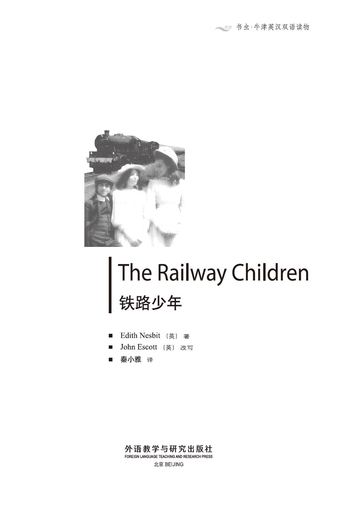
版权页
京权图字：01-2002-6592
Originally published by Oxford University Press, Great Clarendon Street, Oxford. © 2000
This edition is licensed for sale in the People's Republic of China only and not for export therefrom.
'Oxford' is a registered trademark of Oxford University Press.
只限中华人民共和国境内销售，不包括香港特别行政区、澳门特别行政区及台湾省。不得出口。
图书在版编目（CIP）数据
铁路少年＝The Railway Children／（英）内斯比特（Nesbit, E.）著；（英）埃斯科特（Escott, J.）改写；秦小雅译．—北京：外语教学与研究出版社，2003.9（2014.12 重印）
（书虫·牛津英汉双语读物）
ISBN 978-7-5600-3686-1
Ⅰ．铁… Ⅱ．①内… ②埃… ③秦… Ⅲ．小说—对照读物—英、汉 Ⅳ．H319.4：I
中国版本图书馆CIP数据核字（2003）第076642号
出版人： 蔡剑峰
责任编辑：易 璐
封面设计：李 萌
出版发行：外语教学与研究出版社
社 址：北京市西三环北路19号（100089）
网 址：http://www.fltrp.com
版 次：2003年10月第1版
书 号：ISBN 978-7-5600-3686-1
* * *
凡侵权、盗版书籍线索，请联系我社法律事务部
举报电话：（010）88817519
电子邮箱：banquan@fltrp.com
法律顾问：立方律师事务所 刘旭东律师
中咨律师事务所 殷 斌律师
内容简介
内容简介
他们生活中的变化发生得异常突然。此刻，他们还生活在一个幸福的家庭里，要什么有什么。瞬间之后，爸爸就被迫离开——“出差去了”，妈妈是这么讲的。但是她脸色苍白，孩子们明白这是个坏消息。他们不得不离开了他们在伦敦的那个舒适的家，住到了乡下的一座小房子里。现在他们是穷人了，妈妈说。虽然她竭力想让自己的声音听起来高兴一些，无奈双眼中却充满了伤感与忧虑。
罗伯塔、彼得和菲利斯也为他们的爸爸担心，但谁都不能一直那么伤感。新生活开始了，处处都充满新奇的冒险。从他们的新家往山下走，有一条铁路，耀眼明亮的铁轨通向伦敦；还有穿山隧道那黑洞洞的大口，在那里火车从黑暗中呼啸而出，就像体型庞大的野兽……
THE RAILWAY CHILDREN
THE RAILWAY CHILDREN
The change in their lives comes very suddenly. One minute they are all a happy family, with everything that they want. The next minute, Father has to go away— 'on business', Mother says. But her face is white, and the children know that it's bad news. They have to leave their nice home in London, and go and live in a little house in the country. They are poor now, Mother says. She tries to sound happy, but her eyes are sad and worried.
Roberta, Peter, and Phyllis also worry about Father, but no one can be sad all the time. A new life is beginning, with adventures around every corner. And there, down the hill from their new house, is the railway, with its shining lines leading all the way back to London; and the black mouth of the tunnel, where trains come screaming out of the darkness like great wild animals...
目录
1．The beginning of things
1
The beginning of things
They were not railway children at the beginning. They lived with their father and mother in London. There were three of them. Roberta—she was always called Bobbie, and was the oldest. Next came Peter, who wanted to be an engineer when he grew up. And the youngest was Phyllis, who was always trying to be good.
Mother was almost always at home, ready to play with the children, or to read to them. And she wrote stories, then read them to the children after tea.
These three lucky children had everything that they needed. Pretty clothes, a warm house, and lots of toys. They also had a wonderful father who was never angry, and always ready to play a game.
They were very happy. But they did not know how happy until their life in London was over, and they had to live a very different life indeed.
The awful change came suddenly.
* * *
It was Peter's birthday, and he was ten years old. Among his presents was a toy steam engine, and it quickly became Peter's favourite toy. But after three days, the engine went BANG! Peter was very unhappy about his broken toy. The others said he cried, but Peter said his eyes were red because he had a cold.
When Father came home that day, Peter told him the sad story about his engine, and Father looked at it very carefully. Mother and the children waited.
'Is there no hope?' said Peter.
'Of course there's hope!' said Father, smiling. 'I'll mend it on Saturday, and you can all help me.'
Just then, someone knocked at the front door. A few moments later, Ruth—the maid—came in. 'There are two gentlemen to see you,' she said to Father.
'Now, who can they be?' said Father.
'Try to be quick, dear,' said his wife. 'It's nearly time for the children to go to bed.'
But the two men stayed and stayed. Father's voice got louder and louder in the next room, but the children and Mother could not hear what was said. Then Ruth came back and spoke to Mother.
'He wants you to go in, ma'am,' she said. 'I think he's had bad news. Be ready for the worst.'
Mother went into the next room, and there was more talking. Soon after, the children heard Ruth call a taxi, then there was the sound of feet going outside and down the steps.
Mother came back, and her face was white.
'It's time to go to bed,' she said to the children. 'Ruth will take you upstairs.'
'But, Father—' began Phyllis.
'Father's had to go away on business,' said Mother. 'Now, go to bed, darlings.'
Bobbie whispered, 'It wasn't bad news, was it?'
'No, darling,' said Mother. 'I can't tell you anything tonight. Please go now.'
* * *
Mother went out early the next morning, and it was nearly seven o'clock before she came home. She looked ill and tired, and the children asked her no questions.
Mother drank a cup of tea, then she said, 'Now, my darlings, I want to tell you something. Those men did bring bad news last night. Father will be away for some time, and I'm very worried.'
'Is it something to do with the Government?' asked Bobbie. The children knew that Father worked in a Government office.
'Yes,' said Mother. 'Now don't ask me any more questions about it. Will you promise me that?.'
The children promised.
Everything was horrible for some weeks. Mother was nearly always out. Ruth, the maid, went away. Then Mother went to bed for two days, and the children wondered if the world was coming to an end.
One morning, Mother came down to breakfast. Her face was very white, but she tried to smile.
'We have to leave our house in London,' she said. 'We're going to live in the country, in a dear little white house near a railway line. I know you'll love it.'
A busy week followed, packing everything up in boxes. The children almost enjoyed the excitement.
'We can't take everything,' Mother told them. 'Just the necessary things. We have to play "being poor" for a while.'
On their last night in the house, Peter had to sleep on the floor, which he enjoyed very much. 'I like moving,' he said.
'I don't!' said Mother, laughing.
Bobbie saw her face when she turned away. 'Oh, Mother,' she thought. 'How brave you are! How I love you!'
Next day, they went to the railway station, and got on a train. At first, they enjoyed looking out of the windows, but then they became sleepy. Later, Mother woke them.
'Wake up, dears,' she said. 'We're there.'
There were no taxis, and a man with a cart took their boxes. The children and Mother walked behind the cart along a dark, dirty road, which seemed to go across the fields. After a while, a shape appeared in the darkness.
'There's the house,' said Mother.
The cart went along by the garden wall, and round to the back door. There were no lights in any of the windows.
'Where's Mrs Viney?' said Mother.
'Who's she?' asked Bobbie.
'A woman from the village. I asked her to clean the place and make our supper,' said Mother.
'Your train was late,' said the man with the cart. 'She's probably gone home.'
'But she has the key,' said Mother.
'It'll be under the doorstep,' said the man. He went to look. 'Yes, here it is.'
They went inside the dark house. There was a large kitchen with a stone floor, but there was no fire, and the room was cold. There was a candle on the table, and the man lit it. Then a noise seemed to come from inside the walls of the house. It sounded like small animals running up and down. Then the cart man went away and shut the door. Immediately, the candle went out.
'Oh, I wish we hadn't come!' said Phyllis.
play a game 做游戏，玩游戏。
over adj. (of an event or period of time) finished, ended. 完了的，结束的。
awful adj. terrible. 可怕的，糟糕的。
engine n. a piece of machinery with moving parts which changes power from steam, electricity, oil, etc. into movement. Here it means locomotive. 引擎，发动机，此处指火车头。
mend v. to repair (a hole, break, fault, etc.) in sth. 修补，修好。
knock at 敲，敲打。
maid n. (often in comb.) a female servant. （常结合式）女佣，女婢。
ma'am n. a short form for madam. 夫人，女士。
darling n. a person who is very much liked or loved. 亲爱的人。
whisper v. to speak in a low voice so that only a person close by can hear. 低声说话，耳语。
horrible adj. causing horror. 可怕的。
come to an end close; finish; end. 结束。
pack sth. up 包装，收拾行李。
sleepy adj. tired and ready for sleep. 欲睡的，困倦的。
wake up 叫醒，使醒。
appear v. to come into sight, come into view, be seen. 出现。
round v. to travel round. 绕弯，绕行。
go out (of a fire, light, etc.) to stop burning or shining. 熄灭。
故事的开始
1．故事的开始
起初，他们并不是铁路少年。他们和父母一起住在伦敦。他们兄弟姐妹三个，分别是：罗伯塔——大家常叫她博比，年龄最大。彼得排行老二，他长大后想当工程师。老三叫菲利斯，她一向很乖巧。
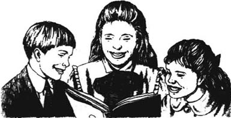
妈妈几乎一直待在家里，或者陪孩子们玩，或者读故事给他们听。她还自己编写故事，在茶后读给孩子们听。
这三个幸运的孩子拥有他们想要的一切。漂亮的衣服，温暖的家，还有好多好多的玩具。他们还有一个难得的好爸爸，他从不发脾气，而且经常陪孩子们做游戏。
他们生活得非常幸福。但直到他们在伦敦的生活结束以后，他们才真正明白了那段生活有多么美好，以后他们不得不过一种截然不同的生活。
这个糟糕的变化降临得十分突然。
* * *
那天是彼得的生日，他已经10岁了。在他收到的生日礼物中，有一个玩具蒸汽火车头，这个火车头很快就成了他最喜欢的玩具。但过了三天，这个火车头突然“砰”地一声坏掉了！彼得为此闷闷不乐。家里的其他人都说彼得哭了，可彼得声称他的眼睛变红是因为他感冒了。
那天，爸爸回来的时候，彼得把这个不幸的消息告诉了他。爸爸仔细地检查了那个火车头。妈妈和孩子们等在旁边。
“没希望修好了吗？”彼得问。
“当然有希望！”爸爸微笑着说，“星期六我给你修好，你们都可以给我帮帮忙。”
就在这个时候，有人敲他家的前门。几分钟之后，鲁思——家里的女佣——走了进来。“有两位先生想要见您。”她对爸爸说。
“现在这个时候，会是谁呀？”爸爸说。
“尽量快点儿，亲爱的，”他妻子说，“孩子们就该上床睡觉了。”
但是，那两个人待了很久。隔壁房间里，爸爸讲话的声音越来越高，不过妈妈和孩子们还是听不清他在说些什么。后来，鲁思回来跟妈妈说话。
“夫人，他想让您过去一下，”鲁思说，“我想可能是不好的消息。做好最坏的准备吧。”
妈妈进了隔壁那个房间，又是一番交谈。过了一会儿，孩子们听到鲁思叫了一辆出租车，随后传来了有人下楼出门的脚步声。
妈妈回来了，面无血色。
“该上床睡觉了，”她对孩子们说，“鲁思会带你们上楼的。”
“但是，爸爸——”菲利斯首先说。
“爸爸要出差，”妈妈说，“现在，上床睡觉吧，亲爱的。”
博比小声说：“该不是什么坏消息吧，是吗？”
“不是，亲爱的，”妈妈说，“今晚我什么也不能告诉你们，请现在就去睡觉吧。”
* * *
第二天一早，妈妈就出门了，直到将近晚上7点才回来。她看上去很不舒服，很疲惫，孩子们什么都没敢问。
妈妈喝了一杯茶，随后她说：“我亲爱的孩子们，现在我想告诉你们一些事情。昨晚那两个人的确带来了坏消息。爸爸要离开我们一段日子，我很担心。”
“是跟政府有关的事情吗？”博比问。因为孩子们知道，爸爸在一个政府部门工作。
“是的，”妈妈说，“别再问这件事了，你们能答应我吗？”
孩子们都答应了。
随后的几个星期里，情况变得一团糟。妈妈几乎不着家。鲁思，就是家里的女佣，也走了。然后，妈妈有两天卧床不起，孩子担心是不是世界末日就要来了。
这天早晨，妈妈终于下楼吃早饭了。虽然她仍是面色苍白，但还是努力露出一些微笑。
“我们得离开伦敦的这个家了，”她说，“我们要住到乡下去，住到一个靠近铁路的、可爱的白色小房子里。我相信你们会喜欢它的。”
接下来的一个星期显得非常忙碌。他们把所有的东西都打包装箱。孩子们干得热火朝天。
“我们不能把什么都带走，”妈妈告诉他们，“只带那些必需品。我们得过一阵子‘穷’日子了。”
在老房子住的最后一个夜晚，彼得不得不睡在地板上，这让他兴奋不已。“我喜欢搬家。”他说。
“我可不喜欢！”妈妈笑着说。
当妈妈把脸转开时，博比看清了她的脸。“呵，妈妈，”她心想，“您是多么勇敢呀！我太爱您了！”
第二天，他们来到火车站，登上了一列火车。起初，他们尽情欣赏着车窗外的景色，但很快他们就有些困了。后来，妈妈叫醒了他们。
“醒醒，亲爱的，”她说，“我们到了。”
这里没有出租车，一个男人用手推车推着他们的箱子。妈妈和孩子们跟在手推车的后面，沿着一条又黑又脏的路走着，好像在穿过田野。过了一会儿，他们看到黑暗中有一个模模糊糊的轮廓。
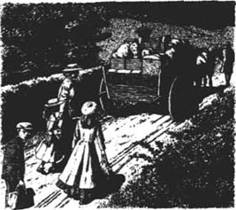
“那就是我们的房子了。”妈妈说。
那人推着手推车，沿着院墙绕到了后门。所有的窗户里都没有一丝光亮。
“瓦伊尼夫人在哪儿？”妈妈说。
“她是谁呀？”博比问。
“她是住在村里的一个妇女。我让她来帮我们打扫房屋，准备晚饭。”妈妈说。
“你们的车晚点了，”推手推车的人说，“她可能已经回家去了。”
“可钥匙还在她手里呢。”妈妈说。
“可能放在台阶下了。”推车的男人说。他走过去瞧了瞧，“是的，在这儿呢。”
他们终于进了这个漆黑的房子。屋里有一个大厨房，用石头铺地，但厨房里没有火，屋里很冷。桌子上有根蜡烛，那个男人点着了它。这时，从房屋的墙里传出了一些声音，听上去像是小动物蹿上蹿下的声音。随后，推车的男人走了，并关上了门。蜡烛立刻就熄灭了。
“哦，我真希望我们没到这里来。”菲利斯说。
2．Peter and the coal
2
Peter and the coal
'You've often wanted something to happen,' said Mother, lighting the candle again. 'And now it has. This is an adventure, isn't it? I told Mrs Viney to leave our supper ready. I suppose she's put it in the other room. Let's go and see.'
They looked in the other room, but found no supper.
'What a horrible woman!' said Mother. 'She's taken the money, but got us nothing to eat at all!'
'Then we can't have any supper,' said Phyllis, unhappily.
'Yes, we can,' said Mother. 'We can unpack one of the boxes. There's some food from the old house.'
They found candles in the box, and the girls lit them. Then Bobbie fetched coal and wood, and lit a fire. It was a strange supper—tomatoes, potato chips, dried fruit and cake. And they drank water out of tea-cups. After supper, they put sheets and blankets on the beds, then Mother went to her own room.
Very early next morning, Bobbie pulled Phyllis's hair to wake her. 'Wake up!' she said. 'We're in the new house, don't you remember?'
They wanted to surprise their mother and get the breakfast ready, but first they went to look outside. The house seemed to stand in a field near the top of a hill, and they could see a long way.
'This place is much prettier than our house in London,' said Phyllis.
They saw the railway line at the bottom of the hill, and the big black opening of a tunnel. Further away, they could see a high bridge between the hills, but the station was too far away to see.
'Let's go and look at the railway,' said Peter. 'Perhaps there are trains passing.'
'We can see them from here,' said Bobbie.
So they sat down on a big, flat, comfortable stone in the grass. And when Mother came to look for them at eight o'clock, they were asleep in the sun.
'I've found another room,' Mother told them. 'The door is in the kitchen. Last night, we thought it was a cupboard.'
There was a table in the little square room, and on the table was their supper.
'There's a letter from Mrs Viney,' explained Mother. 'Her son broke his arm and she went home early. She's coming again later this morning.'
'Cold meat and apple pie for breakfast!' laughed Peter. 'How funny!'
But their supper made a wonderful breakfast.
All day, they helped Mother to unpack and arrange everything in the rooms. It was late in the afternoon when she said, 'That's enough work for today. I'll go and lie down for an hour, before supper.'
The children looked at each other.
'Where shall we go?' said Bobbie, although she already knew the answer.
'To the railway, of course!' cried Peter.
At the bottom of the hill there was a wooden fence. And there was the railway, with its shining lines, telegraph wires and posts, and signals. They all climbed on to the top of the fence. Suddenly, they heard a noise, which grew louder every second. They looked along the line towards the dark opening of the tunnel. The next moment, the railway lines began to shake and a train came screaming out of the tunnel.
'Oh!' said Bobbie, when it had gone. 'It was like a great wild animal going by!'
'It was very exciting!' said Peter.
'I wonder if it was going to London,' said Bobbie. 'London is where Father is.'
'Let's go down to the station and find out,' said Peter.
They walked along the edge of the line, beneath the telegraph wires, to the station. They went up on to the platform, and took a quick look into the Porter's room. Inside, the Porter was half asleep behind a newspaper.
There were a great many railway lines at the station. On one side of the big station yard was a large heap of coal, which the steam trains used for their engines. There was a white line on the wall behind, near the top of the heap. Later, when the Porter came out on to the platform, Peter asked about the white line.
'It's to show how much coal there is in the heap,' said the Porter. 'So we shall know if anybody steals some.' The Porter was smiling, and Peter thought he was a nice, friendly person.
* * *
And so the days passed. The children did not go to school now, and Mother spent every day in her room, writing stories. Sometimes she managed to sell a story to a magazine, and then there were cakes for tea. The children did not forget their father, but they did not talk about him much, because they knew that Mother was unhappy. Several times, she had told them that they were poor now. But it was difficult to believe this because there was always enough to eat, and they wore the same nice clothes.
But then there were three wet days, when the rain came down, and it was very cold.
'Can we light a fire?' asked Bobbie.
'We can't have fires in June,' said Mother. 'Coal is very expensive.'
After tea, Peter told his sisters, 'I have an idea. I'll tell you about it later, when I know if it's a good one.'
And two nights later, Peter said to the girls, 'Come and help me.'
On the hill, just above the station, there were some big stones in the grass. Between the stones, the girls saw a small heap of coal.
'I found it,' said Peter. 'Help me carry it up to the house.'
After three journeys up the hill, the coal was added to the heap by the back door of the house. The children told nobody.
A week later, Mrs Viney looked at the heap by the back door and said, 'There's more coal here than I thought there was.'
The children laughed silently and said nothing.
But then came the awful night when the Station Master was waiting for Peter in the station yard. He watched Peter climb on to the large heap of coal by the wall and start to fill a bag.
'Now I've caught you, you young thief!' shouted the Station Master. And he took hold of Peter's coat.
'I'm not a thief,' said Peter, but he did not sound very sure about it.
'You're coming with me to the station,' said the Station Master.
'Oh, no!' cried a voice from the darkness.
'Not the Police station!' cried another voice.
'No, the railway station,' said the man, surprised to hear more voices. 'How many of you are there?'
Bobbie and Phyllis stepped out of the darkness.
'We did it, too,' Bobbie told the Station Master. 'We helped carry the coal away, and we knew where Peter was getting it.'
'No, you didn't,' said Peter, angrily. 'It was my idea.'
'We did know,' said Bobbie. 'We pretended we didn't, but we did.'
The Station Master looked at them. 'You're from the white house on the hill,' he said. 'Why are you stealing coal?'
'I didn't think it was stealing,' said Peter. 'There's so much coal here. I took some from the middle of the heap, and I—I thought nobody would mind. And Mother says we're too poor to have a fire, but there were always fires at our other house, and—'
'Don't!' Bobbie whispered to Peter.
There was a silence, and the Station Master thought for a minute. Then he said to Peter, 'I won't do anything this time. But remember, this coal belongs to the railway, and even from the middle of the heap, it's still stealing.'
And the children knew he was right.
unpack v. to remove (possessions) from a container. 取出，拿出。
sheet n. a large piece of cloth used in a pair on a bed. 被单，褥单。
tunnel n. passage for a road, railway, etc. 隧道，坑道。
comfortable adj. giving comfort esp. to the body. 舒适的，舒服的。
asleep adj. sleeping. 睡着的。
pie n. (often in combination) an often round pastry case filled with meat or fruit, baked usu. in a deep dish. 派，馅饼。
fence n. a wall made of wood or wire, dividing two areas of land. 篱笆。
find out to learn or discover (a fact that was hidden). 弄明白，搞清楚。
edge n. border. 边，沿。
porter n. a man in charge of the entrance to a hotel, school, hospital, etc. 守门人，（这里指）守道工。
heap n. a pile or mass of things one on top of the other. 堆。
steal v. to take (what belongs to another) without any right. 偷，偷窃。
manage to do sth. try to do sth. successfully. 努力做成。
journey n. a trip of some distance. 旅程，旅途，这里指往返。
take hold of catch hold of. 抓住。
pretend v. to give an appearance of (sth. that is not true) with the intention of deceiving. 假装，伪装。
belong to to be the property of. 属于。
彼得与煤
2．彼得与煤
“你们一直盼着有什么事情发生，”妈妈一边说着，一边重新点着了蜡烛，“现在终于发生了。这是个奇遇，对吗？我告诉过瓦伊尼夫人，让她给我们准备好晚饭。我猜想她一定是把饭放在另一个房间里了。我们过去看看吧。”
他们在那个房间里找了找，没有找到晚饭。
“这个女人太可恶了！”妈妈说，“她把钱拿走了，但一点儿吃的也没给我们准备！”
“那我们就没晚饭吃了。”菲利斯沮丧地说。
“不，我们有东西可吃，”妈妈回答，“我们可以打开一个箱子，那里面装着一些从老房子带来的食物。”
他们还在箱子中找出了蜡烛，女孩子们把它们点着。随后，博比又找来一些煤和木头，生起了火。那是一顿很奇怪的晚餐——西红柿，土豆片，果脯和蛋糕。他们还用茶杯喝了点水。晚饭后，他们铺好了床单和毯子，之后妈妈就进了她自己的房间。
第二天一大早，博比就拽着菲利斯的头发把她弄醒。“醒醒！”她说，“我们住到新房子里了，难道你忘了吗？”
他们想给妈妈一个惊喜，把早饭准备好，不过他们更想先到外面去看一看。这座房子好像是坐落于靠近山顶的一片田野中，他们能看见一条长长的路。
“这个地方比我们在伦敦的家漂亮多了。”菲利斯说。
他们看见了山脚下的铁路，还有穿山隧道又黑又大的入口。再往远眺，他们看见小山之间有一架高高的桥，不过，车站太远了，他们看不到。
“我们去看看铁路吧，”彼得说，“没准儿会有火车驶过呢。”
“在这儿我们也一样能看到。”博比说。
于是，他们在草地中一块又大又平、非常舒服的石头上坐下了。8点钟，当妈妈过来找他们的时候，他们已经在阳光下睡着了。
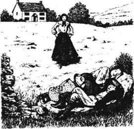
“我又发现了一个房间，”妈妈告诉他们说，“这个房间的门在厨房里。昨天晚上我们还以为那是一个柜橱。”
这个正方形的小房间里摆着一张桌子，桌子上放着他们的晚饭。
“屋里有一封瓦伊尼夫人写的信，”妈妈解释说，“她的儿子摔断了胳膊，所以她提早回家去了。今天早晨晚些时候，她还会再来的。”
“早饭吃冷肉和苹果派！”彼得大笑，“太滑稽了！”
但是，昨天的晚饭现在成了一顿不错的早餐。
整整一天，孩子们都在帮妈妈打开箱子，归置房间里的东西。傍晚的时候，妈妈说：“今天就干到这里吧。晚饭前，我需要去躺一个钟头。”
孩子们面面相觑。
“那我们该到哪儿去呢？”博比问道，虽然说这话时她心里已经有了答案。
“当然到铁路上去啦！”彼得大喊。
山脚下有一道木头篱笆，铁路就在那里，铁轨亮闪闪的，还有电报线和电线杆以及各种标志牌。他们都爬到了篱笆顶上去。突然，他们听到了一个声音，而且它很快就变得越来越大。顺着铁轨，他们往隧道黑暗的出口望去。转眼之间，他们看见铁轨开始颤动，一列火车从隧道中呼啸而出。
“哦！”火车驶过之后，博比感叹，“简直像是一头庞大的野兽跑了过去！”
“真带劲儿！”彼得说。
“不知道这火车是不是去伦敦的，”博比说，“爸爸还在伦敦呢。”
“那我们下去，到车站去问问清楚吧。”彼得提议。
于是，孩子们沿着铁路，在电报线下面走着，来到了车站。他们登上站台，迅速地往守道工的房间里瞧了瞧。屋里，守道工在报纸后面，已经快睡着了。
车站里，一条条的铁轨纵横交错。在车站大院的一侧，有一大堆煤，这是蒸汽火车发动机的燃料。煤堆后面的墙上划着一道白色的线，就在靠近煤堆顶部的位置。过了一会儿，守道工出来的时候，彼得问他那条白线是干什么用的。
“那是用来标明煤堆高度的，”守道工说，“这样我们就能知道是不是有人偷煤了。”守道工和颜悦色的，彼得觉得他是一个善良的好人。
* * *
光阴流逝。孩子们现在已经不再上学了，妈妈每天都待在她的房间里写故事。有时候，她也能想办法把故事卖给杂志社，这样，他们就可以有茶点吃了。孩子们并没有忘记他们的父亲，但他们并不经常谈起他，因为他们都知道，妈妈已经十分郁闷了。有几次，妈妈告诉他们说，他们现在是穷人了。但孩子们很难相信这一点，因为他们还一直可以吃饱饭，还穿着过去的那些好衣服。
可后来连续下了三天雨，天又湿又冷。
“我们可以生火吗？”博比问。
“我们不能在六月份就生火，”妈妈说，“煤很贵。”
喝过茶后，彼得对姐妹俩说：“我有一个主意。在证实它是个好主意之后，我会把它告诉你们的。”
第三天晚上，彼得对女孩子们说：“来帮我一个忙吧。”
山坡上，就在车站上方的草丛中，有一些大石头。在石头中间，女孩子们看到了一小堆煤。
“是我发现的，”彼得说，“帮我一起把它运回家里吧。”
往山上跑了三趟之后，孩子们终于把这些煤堆到了自家后门处的煤堆上。他们没跟任何人讲这件事情。
一个星期之后，瓦伊尼夫人看着房子后门那里的煤堆说：“这煤比我印象中的要多。”
孩子们偷偷地笑了，还是什么也没说。
但是，那个倒霉的夜晚终于到来了，车站站长在车站的院中等着彼得。他看见彼得爬上院墙旁边的那个大煤堆，然后开始往一个袋子里装煤。
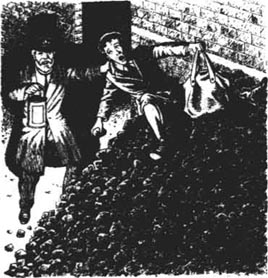
“这回我可抓到你了，你这个小窃贼！”站长大喊着，一边抓住了彼得的大衣。
“我不是小偷。”彼得说，不过他的声音可不是那么理直气壮。
“跟我到车站去。”站长说。
“哦，不！”在黑暗中，有个声音哭喊着。
“不要去警察局！”另一个声音哭叫着。
“不，是去火车站。”站长说，更多声音的出现令他颇感惊讶，“你们一共有几个人？”
博比和菲利斯从黑暗中走了出来。
“我们也参加了，”博比告诉站长，“我们帮他把煤运走，而且我们也知道彼得是在哪里弄到的煤。”
“不，不关你们的事，”彼得生气地说，“这是我的主意。”
“我们的确知道你从哪儿弄的煤，”博比说，“我们假装不知道，其实我们都知道。”
站长看看他们。“你们就住在山顶上的那个白房子里吧，”他说，“可是你们为什么要偷煤呢？”
“我想这不算是偷，”彼得说，“这儿有这么多煤，我从煤堆中间挖走一些，我——我，想不会有人介意的。妈妈说，我们太穷了，不能生火，但在我们原来的房子里，我们一直都有炉火，而且——”
“别说了！”博比低声对彼得说。
室内的气氛陷入了沉默，站长想了想。然后他对彼得说：“这次我就不惩罚你们了。但你们记住，这煤属于铁路，即使是从煤堆中间挖，那也是偷。”
孩子们明白，他的话是对的。
3．The old gentleman
3
The old gentleman
The children could not keep away from the railway, and they soon got to know the trains that passed by. There was the 9.15 and the 10.07, and the midnight train that sometimes woke them from their dreams.
One morning they were sitting on the fence, waiting for the 9.15, when Phyllis said, 'It's going to London, where Father is. Let's all wave as it goes by. Perhaps it's a magic train and it can take our love to Father.'
So when the 9.15 came screaming out of the tunnel, the three children waved...
... And a hand waved back! It was holding a newspaper and it belonged to an old gentleman.
The old gentleman travelled on the 9.15 every day. He had white hair and looked very nice, and soon they were waving to him every morning. They pretended he knew Father, and that he was taking their love to him.
At first, they did not visit the station. After the trouble with the coal, Peter was afraid of seeing the Station Master again. But then he did see him, on the road to the village one day.
'Good morning,' said the Station Master, in a friendly way.
'G—good morning,' said Peter.
'I haven't seen you at the station recently,' said the Station Master.
'After the trouble with the coal...' began Peter.
'That's over and forgotten now,' said the Station Master. 'You come to the station when you like.'
'Oh, thank you,' said Peter.
And the three children went the very same day. They spent a happy two hours with the Porter, a nice friendly man called Perks, who answered all their questions about trains and railways.
The next day, Mother stayed in bed because her head ached so badly. She was very hot and would not eat anything, and Mrs Viney told her to send for Dr Forrest. So Peter was sent to fetch the doctor.
'I expect you want to be nurse,' Dr Forrest said to Bobbie, after he had seen Mother. 'Your mother is ill and must stay in bed. I'll send some medicine for her, but she will need fruit and milk, and some other special things that I'll write down on a piece of paper for you.'
When the doctor had gone, Bobbie showed Mother the piece of paper. Mother tried to laugh. 'Impossible!' she said. 'We can't buy all those things! We're poor, remember?'
Later, the children talked together.
'Mother must have those things,' said Bobbie. 'The doctor said so. How can we get them for her? Think, everybody, just as hard as you can.'
They did think. And later, when Bobbie was sitting with Mother, the other two were busy with a white sheet, some black paint and a paint brush.
The next morning, the 9.15 came out of the tunnel and the old gentleman put down his newspaper, ready to wave at the three children. But this morning there was only one child. It was Peter.
Peter was showing him the large white sheet that was fixed to the fence. On the sheet were thick black letters that read: LOOK OUT AT THE STATION.
A lot of people did look out at the station, but they saw nothing strange. But as the train was getting ready to leave, the old gentleman saw Phyllis running towards him.
'I thought I was going to miss you!' she shouted, and pushed a letter into his hand, through the window, as the train moved away.
The old gentleman sat back in his seat and opened the letter. This is what he read:
Dear Mr (we do not know your name),
Mother is ill and the doctor says we must give her these things at the end of the letter, but we haven't got enough money to get them. We do not know anybody here except you, because Father is away and we do not know his address. Father will pay you, or if he has lost all his money, Peter will pay you when he is a man. We promise it.
Please give the things to the Station Master, because we do not know which train you come back on. Tell him the things are for Peter, the boy who was sorry about the coal, then he will understand.
Bobbie Phyllis Peter
Written below the letter were all the things the doctor had ordered, and the old gentleman read through them. His eyes opened wide with surprise, but he smiled.
At about six o'clock that evening, there was a knock at the back door. The three children hurried to open it, and there stood Perks, the friendly Porter, with a large box. He put it on the floor.
'The old gentleman asked me to bring it,' he said.
Perks left, and the children opened the box. Inside were all the things they had asked for, and some they had not—some wine, two chickens, twelve big red roses. And there was a letter.
Dear Bobbie, Phyllis and Peter,
Here are the things you need. Your mother will want to know where they came from. Tell her they were sent by a friend who heard she was ill. When she is well, you must tell her all about it, of course. And if she says you were wrong to ask for the things, tell her that I say you were right, and that I was pleased to help.
The name at the bottom of the letter was G. P. something——the children could not read it.
'I think we were right,' said Phyllis.
'Of course we were right,' said Bobbie.
'I hope Mother thinks we were right, too,' said Peter. But he didn't sound very sure.
wait for 等，等待。
wave v. to move sth. in one's hand as a signal, esp. in greeting. 挥手，招手。
magic adj. caused by or used in a magic. 有魔力的。
ache v. to have or suffer a continuous dull pain. 持久的疼痛，疼痛。
fetch v. to go and get and bring back. 取来，拿来。
impossible adj. not possible. 不可能的。
address n. the number of the building, name of the street and town, etc., where a person works or esp. lives. 地址。
pay v. to give money for goods bought or got. 付款。
with surprise 出乎意料地，意外地。
老先生
3．老先生
孩子们已经离不开铁路了，他们很快摸清了经过这里的列车的时间。上午9:15和10:07各有一趟，半夜还有一趟，那趟列车有时会把他们从梦中吵醒。
这天早晨，他们都坐在木篱笆上，等9点15分那趟列车，正在这时，菲利斯说：“这车是去伦敦的，爸爸还在那里呢。待会儿火车经过的时候，我们一起对它招手吧。也许这是一辆有魔力的火车，能把我们的爱带给爸爸。”
于是，当9点15分那趟列车从隧道中呼啸而出的时候，三个孩子就对着它招手……
……竟然有一只手在回应他们！那只手里拿着一张报纸，是一位老先生的手。
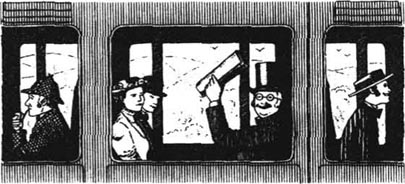
这位老先生每天都乘坐这趟9点15分的火车。他满头白发，样子很慈祥，很快他们每天早晨都向他招手。他们假定老先生认识他们的爸爸，能把他们的爱带过去。
一开始，他们并不到车站去。因为在偷煤事件之后，彼得很害怕再见到站长。但是有一天，在去村子的路上，他真的碰到站长了。
“早上好。”站长招呼着，态度十分友善。
“早——早上好。”彼得说。
“我最近没有在车站看见你。”站长说。
“自从偷煤的麻烦之后……”彼得开始说。
“事情都过去了，忘了它吧，”站长说，“想到车站来你们就来好了。”
“哦，谢谢您。”彼得说。
当天，三个孩子就到车站去了。他们跟那个和善的守道工珀克斯一起度过了愉快的两小时，他回答了孩子们提出的所有跟火车和铁路有关的问题。
第二天，因为头疼得厉害，妈妈卧床不起。她高烧不退，吃不进任何东西，瓦伊尼夫人建议她请福里斯特大夫过来看看。于是，彼得被派去请医生。
“我希望你想当护士，”给妈妈看过病之后，福里斯特大夫对博比说，“你妈妈病了，需要卧床休息。我会给她送一些药来，但她还需要进些水果、牛奶和其他一些特别的东西，我会把需要的东西给你列在一张纸上的。”
医生走后，博比让妈妈看了看那张纸。妈妈勉强笑了笑。“不可能！”她说，“我们买不起这些东西！我们现在是穷人，还记得吗？”
过了一会儿，孩子们一起讨论了起来。
“妈妈一定得吃那些东西，”博比说，“医生是这么说的。可是我们该去哪儿给她弄这些东西来呢？动动脑筋，大家好好动动脑筋。”
他们绞尽了脑汁。随后，博比坐在那里陪着妈妈，另外两个孩子则拿着一张白布单、一些黑色的颜料和一支画笔忙个不停。
第二天早晨，当9点15分的那趟火车穿出隧道时，车上的老先生放下手中的报纸，准备向三个孩子招手。但是今天早晨只有彼得一个人站在那里。
彼得向老先生指着那张钉在篱笆上的大白布。白布上用又粗又黑的字体写着：到车站时请往窗外看看。
火车到站时，很多人的确都在往窗外看，但他们并没有看到什么新奇的事情。但是就在火车快要开动时，老先生看见菲利斯向他跑过来。
“我以为我赶不上您了！”她一边大喊，一边在火车启动的瞬间，从窗户把一封信塞到了老先生的手中。
老先生坐回到座位上，打开了手中的信。信的内容是这样的：
亲爱的先生（我们不知道您的名字）：
妈妈病了，医生说我们必须给她弄到信的末尾所列的这些东西，但我们没有足够的钱。在这儿除了您，我们谁都不认识，因为爸爸不在家，我们也不知道他的地址。爸爸将来会把这些钱还给您的，如果他没钱的话，彼得长大后会还给您的。我们发誓。
请把东西交给站长，因为我们不知道您乘哪趟火车返回。您告诉站长这些东西是给彼得的，就是那个因为煤的事而充满歉意的男孩儿，他就会明白的。
博比，菲利斯，彼得
信后列着医生让他们买的那些东西，老先生把这些东西从头至尾看了一遍。他惊讶得睁大了双眼，不过还是笑了。
那天晚上大约6点钟左右，有人敲家里的后门，三个孩子忙过去开门。门外站着珀克斯，那个友好的守道工，他手里拿着一个大盒子。他把盒子放在了地板上。
“是那位老先生要我送来的。”他说。
珀克斯走了，孩子们打开了盒子。里面装着他们信里列出的所有东西，甚至还有一些他们没有列举的——一些葡萄酒，两只鸡，12朵大大的红玫瑰。还有一封信。
亲爱的博比、菲利斯、彼得：
这是你们需要的东西。你们的妈妈会问你们这些东西是从哪里来的，就说是一个朋友听说她生病了送来的。当然，她病好了之后，你们一定要告诉她真相。如果她说你们做错了，就请告诉她，我认为你们做得对，而且我很乐意帮助你们。
信的末尾署名是G. P. 什么什么——孩子们不认识。
“我想我们是做对了。”菲利斯说。
“我们当然做对了。”博比也说。
“我希望妈妈也认为我们做得对。”彼得说。但听起来他好像不太确定。
4．Bobbie's ride
4
Bobbie's ride
About two weeks later, the old gentleman saw another white sheet with black letters when he looked out of the train. It said: SHE IS NEARLY WELL. THANK YOU.
Then it was time for the children to tell Mother what they had done. It was not easy, but they had to do it. And Mother was very angry indeed.
'Now listen, it's true that we're poor,' she told them, 'but you must not tell everyone. And you must never, never ask strangers to give you things.'
'We didn't mean to be bad, Mother,' cried Bobbie.
'We're sorry,' said Phyllis and Peter, crying too.
Soon, Mother was crying with them. 'I'll write a letter to the old gentleman and thank him,' she said. 'You can give it to the Station Master to give him. Now we won't say any more about it.'
The day after the children took the letter to the station, it was Bobbie's birthday. In the afternoon, she was politely told to go out until tea-time.
'You mustn't see what we're doing,' said Phyllis. 'It's a surprise.'
Bobbie went into the garden, and then she walked across the fields. When she came back, Phyllis and Peter met her at the back door. They were very clean and tidy, and Phyllis was wearing her prettiest dress. There was just enough time for Bobbie to make herself tidy before they called her into the front room.
Mother, Peter, and Phyllis were standing near the table, and there were twelve lighted candles on it, one for each of Bobbie's years. The table was covered with beautiful flowers from the fields and garden, and there were some interesting little boxes, too.
'Happy birthday, Bobbie!' they shouted happily. 'Open your presents!'
They were very nice presents. There was a pretty handkerchief with flowers on it, from Phyllis. A lovely little silver brooch of Mother's, shaped like a rose, which Bobbie had loved for years. There were two blue glass vases from Mrs Viney. And there were three birthday cards with pretty pictures.
'This is my present,' said Peter, putting his toy steam engine on the table. It was full of sweets. Bobbie looked surprised, because just for a moment she thought Peter was giving her the engine. 'Not the engine,' he said quickly. 'Only the sweets.' But he had seen the look on her face. 'I mean, not all the engine. You... you can have half, if you like,' he said bravely.
'Thank you, Peter,' said Bobbie. 'It's a wonderful present.' And she thought: 'It was very kind of Peter to give me half of his engine. Well, I'll have the broken half, and I'll get it mended.'
It was a lovely birthday. But later that night, Bobbie came silently down the stairs to get her presents. She saw her mother sitting at the table, with a pen and some writing paper in front of her. 'She's writing to Father,' thought Bobbie.
But at that moment, Mother wasn't writing. Her head was on her arms and her arms lay on the table.
'It's my birthday, and she doesn't want me to know she's unhappy,' thought Bobbie. 'Well, I won't know, I won't know.'
And she went quietly back to her room. But it was a sad end to the birthday.
* * *
The next day, Bobbie put Peter's engine in a box and took it down to the railway. She did not go to the station, but she went along the line to the place where the engines stopped.
When the next train came in, Bobbie went across the line and stood beside the engine. She had never been close to one before, and it was very big. The driver and the fireman did not see her. They were talking to Perks, the Porter, who was on the other side of the line.
'Excuse me,' began Bobbie. But the men did not hear her because the engine was making a lot of steam and noise. Bobbie climbed on to the step of the engine—but at that moment, the train began to move!
Bobbie fell inside, on to a heap of coal. 'Help!' she cried. But still the men didn't see or hear her.
'I shouldn't be here!' she thought, as the train went faster. 'I'll be in terrible trouble!'
She put out a hand and touched the nearest arm, and the driver turned round quickly. 'What are you doing here?' he shouted. And Bobbie began to cry.
This seemed to worry the two men, and they took several minutes to calm Bobbie down and to stop her crying. Then the fireman said, 'Now tell us why you're here. It's not every day a little girl falls into our steam engine!'
Bobbie picked up the box with Peter's toy engine inside it. 'I... I wanted to ask if you could mend this,' she explained, and took the engine out of the box. 'Everybody on the railway seemed so good and kind. I didn't think you'd mind.'
The driver took the little engine and the two men looked at it silently, not speaking for several minutes. Bobbie waited.
'What do you think, Jim?' said the driver at last. 'Can we help the little lady?'
The fireman smiled. 'I should think we can!'
'Oh, thank you!' said Bobbie.
'But now we must make sure that you get home safely,' said the driver.
Bobbie stayed on the train until it reached Stackpoole Junction. She asked the two men all about driving a steam train, and they showed her the automatic brake, and the little clock faces that told them how much steam the engine was making. It was all very interesting. At Stackpoole Junction the two railwaymen put her on another train and sent her home.
Bobbie was back in time for tea.
'Where have you been?' asked the others.
'To the station, of course,' said Bobbie. But she would not say another word.
It was some weeks before Bobbie took her brother and sister to meet the friendly engine driver and fireman. The two children were very surprised. And Peter was very excited when he saw his engine, now as good as new again.
And only then, as the three children walked home again, did Bobbie tell the others about her adventures on the engine of the steam train.
ride n. a journey. 旅程，兜风。
well adj. in good health. （指身体）很好。
mean to do sth. plan to do sth. 打算做某事。
brooch n. an ornamental worn on women's clothes, fastened on by means of a pin. （女用）胸针，饰针。
vase n. a container, usu. shaped like a deep pot with a rather narrow opening at the top and usu. made of glass or baked clay, used either to put flowers in or as an ornament. 瓶，花瓶。
not... but 不是……而是。
fireman n. a person who tends the fire in a furnace, steam-engine, etc. （锅炉，蒸汽机等的）司炉工。
calm down to make (a living being) calm. 使（生物）平静。
automatic adj. (esp. of a machine) able to work or move by itself without needing the operation of a man. 自动的。
brake n. an apparatus for slowing or lessening movement and bringing to a stop (as of a wheel or car). 刹车，制动器。
博比的旅行
4．博比的旅行
大约两个星期之后，当老先生再次往窗外张望时，他又看到了一张写着黑字的白布单。白布单上写着：她快好了，谢谢您。
终于到了孩子们跟妈妈讲明一切的时候了。尽管这不太容易，可他们也得讲。妈妈的确十分恼火。
“现在你们听着，我们是很穷，”她告诉孩子们，“但是你们不能对任何人说。你们永远不能，永远不能向陌生人索要东西。”
“妈妈，我们没打算做坏事。”博比哭着解释。
“我们很抱歉。”菲利斯和彼得也哭着说。
很快，妈妈也和他们一起哭了起来。“我会给那位老先生写封信，向他表示感谢的，”她说，“你们可以请站长把信转交给他。现在什么都别再说了。”
孩子们把信送到车站去的第二天是博比的生日。那天下午，大家委婉地请她回避一下，到喝茶的时间再回来。
“你不能在场看我们做些什么，”菲利斯说，“这是一个惊喜。”
博比先是来到了花园里，之后她穿过田野走了走。当她返回的时候，菲利斯和彼得在后门迎接她。他们打扮得干净整齐，菲利斯还穿着她最漂亮的那条连衣裙。当然博比在大家让她进客厅之前，也有足够的时间来梳理自己。
妈妈、彼得和菲利斯正站在桌旁，桌子上点着12枝蜡烛，每一枝代表一岁。桌上放满了从田野中和花园里采来的漂亮的花，除此之外，还有一些有趣的小盒子。
“生日快乐，博比！”大家开心地喊道，“打开你的礼物看看吧！”
这些礼物非常棒。一块有花形图案的漂亮手绢，这是菲利斯送的。妈妈送的是一枚可爱的银质小胸针，样子像一朵玫瑰花，博比心仪这枚胸针已经有好几年了。瓦伊尼夫人送给她的是两只蓝色的玻璃花瓶。桌上还有三张印有精美图案的生日贺卡。
“这是我送你的礼物。”彼得一边说着，一边把他的那个玩具蒸汽火车头放在了桌子上。火车头里装满了糖果。博比有些吃惊，因为那一瞬间，她以为彼得要把火车头送给她。“不是送你火车头，”他赶紧说，“只送你糖果。”但他瞧见了博比脸上表情的变化。“我的意思是，我不是把整个火车头送给你，如果你喜欢的话，你……你可以拥有一半。”他鼓足勇气说。
“谢谢你，彼得，”博比说，“这礼物太棒了。”她心里想：“彼得真是太好了，他愿意送一半火车头给我。嗯，那我就要那坏的那一半吧，我可以找人修一下。”
这是一个愉快的生日聚会。当天深夜，博比悄悄下楼去取她的礼物。她看见妈妈坐在桌旁，面前放着一枝钢笔和一些信纸。“妈妈在给爸爸写信呢。”博比心想。
不过在那一刻，妈妈并没有在写字。她的两只胳膊搭在桌上，头埋在胳膊里。
“今天是我的生日，妈妈不想让我知道她心里很苦闷，”博比想，“那么，我就假装不知道吧，我假装不知道。”
她悄悄地回到了自己的房间，但是，这个生日是以伤感结束的。
* * *
第二天，博比把彼得的火车头装进了盒子里，带着它到山下的铁路上去了。她没有去车站，而是沿着铁路，直接去了停靠火车头的地方。
当又一列火车驶进来时，博比穿过铁路，来到了车头的旁边。在此之前，她从来没有如此近距离地见过火车头，火车头很大。司机和司炉工都没看见她，他们正在跟守道工珀克斯说话，而珀克斯站在铁路的另一边。
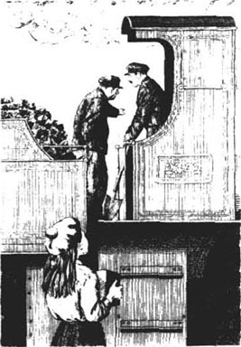
“劳驾。”博比招呼道。但因为火车嘈杂的蒸汽声和其他声响，这三个人都没有听到她的话。博比爬到了火车机车的台阶上——可是，就在同时，火车开动了！
博比摔到车里，倒在了一堆煤上。“救命啊！”她哭喊道。但是，旁边的人仍旧是既没有看到她，也没有听到她的呼救。
“我不能待在这儿！”随着火车跑得越来越快，她心里想，“要不我会有大麻烦的！”
她伸出一只手，踫到了离她最近的火车司机的胳膊，司机猛地转过身。“你在这儿做什么？”他喊道。于是博比开始哭了。
这好像让两个男人担心起来，他们用了几分钟安慰博比，让她别哭了。之后，司炉工对她说：“现在请告诉我们，你怎么会在这儿。一个小女孩儿掉进我们的蒸汽火车头，这种事情可不是每天都发生的！”
博比捡起那个装有彼得的玩具火车头的盒子。“我……我想问问你们能不能把它修好。”她解释着，并把火车头从盒子中取了出来，“铁路上的每个人看上去都很好，很善良。我想你们不会介意的。”
司机接过那个小火车头，两个人静静地看着它，几分钟都没有开口说话。博比等待着。
“你觉得怎么样，吉姆？”司机终于开口说话了，“我们帮得了这位小女士吗？”
司炉工笑了。“我想我们应该能！”
“哦，谢谢你们！”博比说。
“不过，现在我们必须确保你平安回家。”司机说道。
博比一直在火车上坐到斯塔克普枢纽站。她详细地向两个人询问了怎么开蒸汽火车。他们让她看了自动刹车装置和一些小表盘，这些小表盘能表明发动机产生了多少蒸汽。真是太有意思了。在斯塔克普枢纽站，两位铁路工人把她送到了另一列火车上，送她回家。
博比回到家时，正好是喝下午茶的时间。
“你到哪儿去了？”其他人问。
“当然是去车站了。”博比说。但除此之外，她什么都不说了。
几个星期之后，博比带着她的弟弟和妹妹去见了亲切的火车司机和司炉工。那两个孩子简直惊呆了，尤其当彼得看见他的玩具火车头现在崭新如初的时候，他欣喜若狂。
直到那天，当三个孩子走着回家的时候，博比才跟他们讲述了她在蒸汽火车头上的奇遇。
5．Saving the train
5
Saving the train
One day, the children were walking by the fence along the top of the hill beside the railway line. The line here ran through a deep little valley and the hillside on both sides of the line was very rocky. But among the rocks, grass and flowers grew, and many small trees.
Phyllis stood by the fence and looked down to the lines at the bottom. 'It's like looking down the side of a mountain,' she said.
Suddenly, they heard a noise. It was soft, but very clear, and slowly began to get louder.
'Look at the tree over there!' cried Peter.
The girls looked and saw a tree moving slowly downwards on the opposite side of the railway line!
'It's magic!' said Phyllis. 'I knew the railway was magic. Look, some other trees are moving, too.'
They watched as the trees moved on and on, grass and stones moving with them. Then a big rock began to move as well, and suddenly half the hillside was moving. A second or two later, everything came crashing down in a big heap on the railway line below.
'It's right across the line!' said Phyllis, feeling a little frightened now.
'Yes,' said Peter, slowly. 'And the 11.29 hasn't gone by yet. We must let them know at the station, or there will be an awful accident.'
'There isn't time,' said Bobbie. 'It's past eleven now.'
They thought for a moment.
'We need something red. Then we could go down on the line and wave it,' said Peter. 'Everyone knows that red means danger, and the train would stop.'
'Our petticoats!' said Phyllis. 'They're red. Let's take them off.'
The girls did this, then the three of them ran along the line to a corner. When they were round the corner, it was impossible to see the heap of trees and rocks.
'We'll need some sticks as well,' said Peter, taking one of the petticoats. 'Now...' He took a knife from his pocket.
'You're not going to cut them, are you?' said Phyllis.
'Yes, cut them!' said Bobbie. 'If we can't stop the train, there will be a real accident and people will be killed.'
They cut the petticoats into six pieces and put them on to sticks. Now they had six red flags. Next, they pushed two of the flags into heaps of stones between the lines, then Bobbie and Phyllis each took one, and Peter took the other two. They stood ready to wave them immediately the train appeared.
It seemed a long time before the railway lines began to shake, and they heard the train coming.
'Wave your flags!' ordered Peter. 'But don't stand on the line, Bobbie!'
The train came very, very fast. The lines began to shake and the two flags that were pushed into the heaps of stones soon fell over, but Bobbie ran across and picked up one of them.
'The train's not going to stop!' she shouted. 'They won't see us, it's no good!'
She ran on to the line, waving her two flags.
'Get back, Bobbie!' shouted Peter.
But Bobbie did not move from the line. She waved and waved her flags, shouting 'Stop, stop!' as the big black engine came towards her.
It did stop... but only twenty metres from Bobbie.
Peter and Phyllis ran along the line to tell the driver about the trees and rocks around the corner. But Bobbie couldn't move because her legs were shaking too much. She had to sit down on the ground.
But they had saved the train.
'You're brave and clever children,' the driver told them.
* * *
Some weeks later, a letter arrived at the little white house on the hill. It was for Peter, Bobbie, and Phyllis, and it said:
Dear Sir and Ladies—We would like to say thank you for saving the train and stopping a very bad accident. Please come to the station at three o'clock on the 30th of the month, if this is a suitable day.
J. Inglewood
Secretary, the Northern and Southern Railway Company
It was to be a very special day indeed.
The three children went down to the station at the right time, dressed in their best clothes, and the Station Master came to meet them.
'Come into the waiting room,' he said.
He took them into the room where people usually waited for the trains—but now there was a carpet on the floor, and flowers above the pictures on the walls.
Perks the Porter was there, and several men in high hats and long coats. There were ladies in expensive dresses, and people who had been on the train on 'red-petticoat day'. Best of all, their own old gentleman was there, and he came across to shake their hands.
Then everybody sat down on chairs and an important looking man got up to speak. He said nice things about the children—how brave and clever they were—and then he sat down. Next, the old gentleman got up and said more nice things about them. Then he called them across and gave each of them a beautiful gold watch.
'These are from the Northern and Southern Railway Company,' he said, 'to say thank you for the brave and sensible thing that you did to save the train.'
It was a wonderful day. A day that seemed more like a dream than real life.
Afterwards, the old gentleman walked with them to the little white house. 'I want to meet the mother of these clever children,' he said.
Mother was surprised to see their visitor, but she thanked him again for the things he had sent when she was ill. Then they talked about 'red-petticoat day', and the children showed Mother their watches and told her about the people at the station.
'I've been very pleased to meet you,' Mother said to the old gentleman, when it was time for him to leave. 'I'm sorry we can't ask you to come and see us again, but we live very quietly.'
The children thought this was very strange. They had made a friend—a very good friend—and they dearly wanted him to come and see them again.
What did the old gentleman think? They didn't know. He looked closely at Mother and said, 'I thank you, Madam, for welcoming me to your house today.'
But Bobbie was watching her mother's face as the old gentleman walked away. It was a sad, tired face.
'She's thinking about Father,' thought Bobbie.
valley n. the land lying between two lines of hills or mountains, often with a river running through it. 山谷，溪谷。
rock n. stone. 石头。
crash v. to cause to fall or strike the ground noisily and violently. 猛撞，猛坠。
petticoat n. a type of skirt worn by women as an undergarment. 衬裙。
take off to remove a garment. 脱掉衣服。
stick n. a small thin piece of wood. 小树枝，柴枝。
no good/not much good useless. 无用，无益。
be dressed in wear. 穿着，戴着。
expensive adj. costing a lot of money; costly. 昂贵的，花钱的。
shake hands with...: 与……握手。
get up stand up. 起身，站起来。
sensible adj. reasonable; having or showing good sense. 明智的，通晓事理的。
more... than... 与其说……倒不如……。
dearly adv. with much feeling, usu. good feeling. 深情地，真挚地。
拯救火车
5．拯救火车
这天，孩子们正沿着铁路边山顶上的篱笆走着。这一段铁路线要穿过一条深深的小山谷，山谷的两侧石头遍地。但是在这些石头中间长着草、花，还有很多小树。
菲利斯站在篱笆旁，往谷底的铁路看去。“真像是站在山边往下瞧。”她说。
突然，他们听到了一个声音。这声音很弱，却很清晰，渐渐地，声音变得越来越大。
“瞧那边那棵树！”彼得大喊。
女孩们望过去，看到在铁路线的另一边，一棵树正在往下缓缓移动！
“太神奇了！”菲利斯说，“我就知道这铁路是有魔力的。瞧，其他的树也在动呢。”
他们看着那些树动呀，动呀，青草和石头也随着它们一起移动。紧跟着，有一块大岩石也开始动了，突然间半边山都动了起来。一两秒钟之后，所有这些东西一下子都塌到了下面的铁路上，堆成了一大堆。
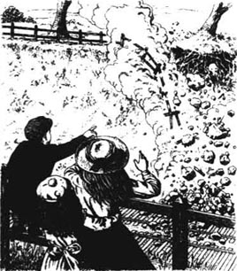
“正好都堆在铁路上！”菲利斯说，这会儿她感到有点儿害怕了。
“是的，”彼得慢吞吞地说，“11点29分那趟车还没通过呢。我们一定得到车站去告诉他们，不然恐怕就要出大事故了。”
“没时间了，”博比说，“现在都11点多了。”
大家想了想。
“我们需要一些红颜色的东西。然后我们可以下到铁路上，挥舞它，”彼得说，“人人都知道红色表示危险，火车就会停下来的。”
“我们的衬裙！”菲利斯说，“我们的衬裙都是红色的。我们把衬裙脱下来吧。”
女孩儿们脱下衬裙。然后，三个孩子一起沿着铁路跑到一个拐弯处。在那里他们发现，在弯道的这一侧，根本看不到那堆树和石头。
“我们还需要些棍子，”彼得一边说着，一边抓起了一条衬裙，“现在……”他从口袋里掏出了一把刀子。
“你该不会把衬裙割了吧？”菲利斯问。
“是的，要把衬裙割了！”博比回答，“如果我们不能让火车停下来的话，真会出事故的，而且肯定会死人的。”
他们把红衬裙割成六块，然后把它们分别绑在六根棍子上。现在他们就有了六面红色的旗子。然后，他们把两面旗子插在铁轨中间的石子堆上。接下来，博比和菲利斯每人拿一面旗子，彼得拿起另外两面。他们站在那里等着，只要火车一出现就马上冲它摇旗子。
似乎过了很长时间，铁路才开始有些震颤，他们听见有火车开过来的声音。
“摇你们手中的旗子！”彼得马上发出命令，“但不要站在铁轨上，博比！”
火车风驰电掣而来。铁轨颤得愈加厉害，很快插在石堆上的那两面旗都倒了，但是博比跑过去，捡起其中的一面。
“火车不会停的！”她大喊，“他们看不到我们，这样做没有用！”
她跑到铁轨上，挥舞着手中的两面旗子。
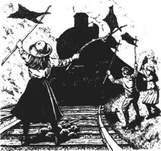
“回来，博比！”彼得大喊。
但是博比并没有从铁轨上走开。她拼命地摇动手中的旗子，还一边大喊：“停下，停下！”此时巨大的黑色火车头正向她开过来。
它终于停下了……就在离博比只有20米远的地方。
彼得和菲利斯沿着铁路跑过去，告诉火车司机前面拐弯处堆有树和石头。而此时，博比却动不了了，因为她的腿抖得厉害。她不得不坐在了地上。
但他们救了这列火车。
“你们真是又勇敢又聪明的好孩子。”火车司机对他们说。
* * *
几个星期之后，一封信寄到了山上的白色小屋。信是寄给彼得、博比和菲利斯的，信上写着：
亲爱的先生和女士们——你们拯救了火车，避免了一场可怕事故的发生，我们特向你们表示感谢。如果方便的话，请于本月30日下午3点钟到车站来一趟。
J．英格伍德
南北铁路公司 秘书
这的确成了一个非常特殊的日子。
三个孩子穿着他们最好的衣服，准时来到了车站，站长过来迎接他们。
“到候车室来吧。”他说。
他带他们进了候车室，这原本是人们等车的地方——但是现在地板上铺上了地毯，墙上的画的上方，还插着花。
除了守道工珀克斯以外，在场的还有几个戴着高帽，穿着长外衣的先生。还有几位穿着盛装的女士，以及一些在“红衬裙日”那天坐在火车上的人。最让他们高兴的是，每天跟他们招手的那个老先生也在场，他径直走过来和他们握手。
大家落座以后，一个看起来像是个大人物的人站起来讲话。他把孩子们表扬了一番——夸奖他们又勇敢又聪明——然后他就坐下了。接着，那位和蔼的老先生站起来，又把他们称赞了一番。说完以后，他把他们叫到身边，送给他们每人一只漂亮的金表。
“这是南北铁路公司送的礼物，”老先生说，“用以感谢你们拯救火车时勇敢聪明的表现。”
今天简直是太棒了。与其说这是真的，还不如说是在做梦。
会见之后，老先生和他们一起，步行来到了他们的白色小屋里。“我想见一见这些聪明孩子们的妈妈。”他说。
看到客人，妈妈很吃惊，但她再次向老先生致谢，感谢老先生在她生病时送给她的东西。随后，他们谈到了那个“红衬裙日”，孩子们让妈妈看了他们的表，跟她讲了刚才在车站里所见到的人。
“见到您我很高兴，”当老先生起身告辞的时候，妈妈说，“但是我很抱歉今后不能再邀请您到我们家来，因为我们不想打破生活的平静。”
孩子们感到很纳闷。他们成了朋友——他是他们一个非常要好的朋友——他们诚恳地希望老先生能再过来看看他们。
老先生又是怎么想的呢？他们不得而知。老先生注视着妈妈，开口说道：“谢谢您，夫人，谢谢您今天的款待。”
但当老先生离开的时候，博比一直注视着妈妈的脸。那是一张伤感、满是倦容的脸。
“她又在想爸爸了。”博比心想。
6．A birthday for Perks
6
A birthday for Perks
It was breakfast-time and Mother was smiling.
'I've sold another story, darlings,' she said. 'We can have cakes for tea.'
The three children looked at each other. Then Bobbie said, 'Can we have the cakes on Thursday instead of today? It's Perks's birthday on Thursday.'
'How do you know?' asked Mother.
'I showed him my brooch—the one you gave me for my birthday—and I asked him about his birthday. He says he doesn't keep birthdays anymore, because he has other things to keep—his wife and children! But he said it was on the 15th, and that's Thursday.'
'And we thought we could make a birthday tea for him,' said Peter. 'He's been very good to us.'
'All right,' said Mother.
But cakes didn't seem a very exciting birthday present.
'We can give him flowers,' said Bobbie, when they were discussing it in the garden, later that day.
Then Peter had an idea. 'Perks is nice to everybody,' he said. 'There must be lots of people in the village who will want to help us give him a nice birthday. Let's ask everybody.'
Bobbie wasn't sure. 'Mother said we weren't to ask people for things.'
'Not for ourselves,' said Peter. 'It's all right to ask for other people. I'll ask the old gentleman, too.'
So they went to the village. Some people were kind, and some were not.
'It's my birthday tomorrow,' said old Mrs Ransome at the Post Office. 'Nobody will remember mine. Why should I give anything to Perks? Go away!'
But other people gave things—a pipe, a tin of tea, a walking stick—and others promised to give small presents, too.
Early the next morning, Bobbie and Phyllis went into the garden and cut some roses. They put them into a box with one of Bobbie's prettiest handkerchiefs. Then they wrote on a piece of paper: For Mrs Ransome for her birthday, with our love, and put it inside the box. Bobbie and Phyllis took the box down to the Post Office, and put it inside the door when the old woman wasn't looking.
While they were gone, Peter told his mother about Perks's presents. 'We're not doing it because he's poor,' said Peter, 'but because we like him.'
'I hope he understands that,' said Mother.
On Thursday morning, the children went to fetch the presents which other people had promised—eggs, meat, tomatoes. The old lady at the Post Office was standing outside as they went by.
'I want to thank you for the roses,' she said.
'We're pleased you liked them,' said Phyllis.
'And here's your box,' said Mrs Ransome, giving it back to them. It was now full of shiny red apples. She smiled. 'The Perks's children will like them. And I've got a pram in the back of the shop. It was for my daughter's first child, but the child died after six months. I'd like Mrs Perks to have it for her little boy. Will you take it?'
'Thank you,' said Bobbie. 'We will.'
The children put all the presents in the pram, and at three o'clock they pushed it to the Perks's little yellow house. Mrs Perks and her young children were surprised to see them.
'We know it's Mr Perks's birthday,' said Peter. 'And we've brought some presents for him.'
The woman's eyes got bigger and bigger with surprise as each thing was taken from the pram.
'Perks has never had a birthday like it!' she said.
The cakes and the presents were put on the table, then the children hid in the other room when they heard Perks coming home from work. They wanted to surprise him by jumping out and saying 'Happy birthday!' after he'd seen the presents.
'What's all this?' they heard him say. 'What's that pram doing here?' His wife explained, but too quietly for the children to hear. But they heard Perks shout, 'I'm not having any of it! We've managed all these years, asking people for nothing, and I'm not going to start taking things now. We may be poor, but we don't need charity.'
Bobbie ran into the other room. 'We thought you'd be pleased!' she cried.
'We didn't mean to do anything wrong,' said Peter, following her.
'I—I'll never be kind to anyone again!' said Phyllis, starting to cry.
'Don't you understand?' said Perks. 'People in the village will laugh at me. "Poor Perks, he can't take care of his own family. We have to give him things." That's what they'll be saying now.'
'No!' cried Bobbie. 'It's not charity! People were happy to give you birthday presents. The man at the village shop said, "I'm pleased to give something to Mr Perks. He always pays his bills." And the woman at the Post Office wanted you to have the pram. It was for her granddaughter, but the little girl died.'
'I'm not sending the pram back, Bert,' said Mrs Perks, when she heard this. 'So don't ask me to.'
'I—I won't,' said Perks, quietly.
'And other people said you were kind and polite and hardworking,' said Bobbie. 'They wanted to give you a birthday present. The old gentleman gave Peter a pound for you. He said you were a man who was good at his work. We thought you would like—'
'Stop!' Perks said suddenly. 'I take back every word I said. I—I don't know if I was ever so pleased... not only with the presents, but with the kind thoughts of our neighbours. They're the best presents of all, aren't they, Nell?'
'They are!' agreed his wife, happily.
Perks looked at the children. 'You'll stay to tea, won't you?' he said.
'Oh, yes please!' they said.
discuss v. to talk with someone from several points of view. 商讨，讨论。
pipe n. a small tube with a bowl-like container. at one end, used for tobacco. 烟斗。
pram n. a 4-wheeled carriage, pushed by hand, in which a baby can sleep or be taken about. 婴儿车。
charity n. a society or organization that gives help to the poor. 慈善机构。
take care of look after. 照顾，照看。
pay the bill pay the money for. 付账。
be good at do well in. 擅长。
take back make as if (sth.) was never said. 收回（所说的话）。
珀克斯的生日
6．珀克斯的生日
吃早饭时，妈妈微笑着。
“亲爱的，我又卖掉了一篇故事，”她说，“我们又有茶点可以吃了。”
三个孩子相互看了一眼。博比开口说道：“我们星期四再吃茶点好吗？因为星期四是珀克斯的生日。”
“你们怎么知道的？”妈妈问。
“我让他看我的胸针——就是我过生日时您送给我的那枚——我问他的生日是什么时候。他说他已经不再过生日了，因为他已经有了其他的事情要操心——他的妻子和孩子们！不过他还是说他的生日是在15号，就是这个星期四。”
“我们想，我们可以邀请他来我们家喝茶，”彼得补充道，“他一直对我们很好。”
“好吧。”妈妈说。
但是，蛋糕并不能算是令人兴奋的生日礼物。
“我们可以送他一些鲜花。”那天晚些时候，当他们在花园里再次讨论这个问题的时候，博比说。
这时，彼得有了主意。“珀克斯对所有的人都很好，”他说，“村里一定有很多人愿意帮我们送他一个不错的生日礼物，我们去问问大家吧。”
博比拿不定主意。“妈妈说，我们不能再张嘴跟别人要东西了。”
“可这不是给我们自己要的，”彼得说，“给别人要应该是可以的，我也会去问那位老先生要的。”
于是他们来到了村里。有些人对他们很友好，可也有些不怎么友好。
“明天是我的生日，”在邮局工作的一位叫兰塞姆的老妇人说，“但没人记得我的生日，我为什么要给珀克斯礼物呢？走开！”
不过其他的人还是给了他们一些东西——一个烟斗，一罐茶叶，一根拐杖——还有一些人也答应要送些小礼物。
第二天一大早，博比和菲利斯就到花园里去剪玫瑰花。他们用博比最漂亮的手绢把剪下的玫瑰扎成一束装进盒子里。然后他们在一张纸上写道：送给兰塞姆夫人，祝她生日快乐，这花代表我们的爱。随后他们把这张纸条也放入盒中。博比和菲利斯拿着盒子下山到了邮局，趁那个老妇人没注意，他们把盒子放到了邮局的门里。
他们走了之后，彼得跟妈妈讲了给珀克斯筹集礼物的事情。“我们这样做，并不是因为珀克斯没钱，”彼得说，“而是因为我们喜欢他。”
“我希望他能理解这一点。”妈妈说。
星期四早晨，孩子们去取其他人答应送的礼物——鸡蛋，肉，西红柿。当他们路过邮局的时候，那位老妇人站在门口。
“我想谢谢你们送给我玫瑰。”她说。
“你能喜欢那些玫瑰我们很高兴。”菲利斯说。
“把你们的盒子还给你们，”兰塞姆夫人一边说着，一边把盒子交回到他们手中。盒子里装满了油光闪闪的红苹果。她微笑着。“珀克斯的孩子们会喜欢的。另外，商店的后面放着一辆婴儿车，那是为我女儿的第一个孩子准备的，但孩子六个月大的时候夭折了。我想珀克斯夫人可以给她的小儿子用。你们愿意把它带过去吗？”
“谢谢您，”博比说，“我们愿意。”
孩子们把所有的礼物都放进婴儿车里，3点钟的时候，他们把这些东西推到了珀克斯家的黄色小房子那里。看到他们，珀克斯夫人和她的小孩子们大吃一惊。
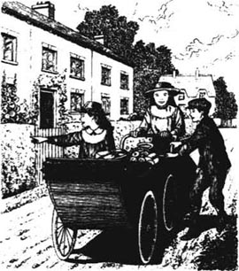
“我们知道今天是珀克斯先生的生日，”彼得说，“我们给他带来了一些礼物。”
随着东西一样样地从婴儿车里拿出来，珀克斯夫人真有些瞠目结舌。
“珀克斯从来没有过这样的生日！”她说。
孩子们把蛋糕和礼物放在桌上，这时他们听到珀克斯下班回来了，于是孩子们躲到了另外一个房间里。他们想等珀克斯看见这些礼物之后，再从里面跳出来，跟他说“生日快乐！”，给他一个惊喜。
“这都是什么？”他们听见他在问，“这辆婴儿车怎么会在这儿？”他的妻子开始解释，但是她说话的声音太低了，孩子们听不见。不过他们听见珀克斯高吼：“我一样都不会接受的！这么多年来，我们都做到了从不张口跟别人要东西，现在我也不会开这个先例的。我们是穷，但我们不需要人怜悯。”
博比跑进了另外的那个房间。“我们还以为您会高兴呢！”她哭着说。
“我们没有恶意。”彼得跟着她说。
“我——我再也不会对任何人好了！”菲利斯说着，哭了起来。
“难道你们不明白吗？”珀克斯说，“村里的人会笑话我的：‘可怜的珀克斯养不起家了，我们得施舍给他一些东西。’他们现在肯定就在这么说。”
“不！”博比哭着说，“这不是慈善捐赠！大家都乐意送生日礼物给您。村里小卖部的人说：‘我非常愿意送给珀克斯先生东西，因为他从不欠账。’还有，邮局的那位夫人希望你能收下这辆婴儿车，这原本是给她的外孙女买的，但那个可怜的小女孩儿死了。”
“我不想把这辆婴儿车送回去，伯特，”听到这里，珀克斯夫人说，“请别要求我这么做。”
“我——我不会。”珀克斯低声说。
“别人也说您心地善良、待人礼貌，而且工作努力，”博比说，“他们都愿意送您生日礼物。那位老先生给了彼得一英镑，让他转交给您。他说您是个十分敬业的人。我们想您会——”
“别说了！”珀克斯突然开口说，“我收回我刚才所说的话。我——我想自己从来没有这么高兴过……不仅仅是因为这些生日礼物，而且也因为邻居们善良的想法。这才是最好的礼物，对吗，内尔？”
“是呀！”他的妻子愉快地附和道。
珀克斯看着孩子们。“你们留下来一起喝茶，行吗？”他说。
“哦，当然行，谢谢！”他们说。
7．The terrible secret
7
The terrible secret
When the children first went to live at the white house, they talked about Father a lot and were always asking questions about him. But as time passed, their questions seemed to make Mother unhappy, so they stopped asking them. But they never forgot him.
Bobbie thought about Father often. She knew her mother was unhappy, and she worried a lot about that. And why was Father away for so long? Was there something that Mother wasn't telling them?
The answer came on the day she went to the station, to fetch the magazines. They were old magazines which people left on trains or in the waiting room. Perks said the children could have them to read, and one day Bobbie went to fetch them.
'I'll just put some newspaper round them to keep them together,' said Perks. And he took an old newspaper from the heap.
The magazines were heavy, and Bobbie stopped to rest on the way home. She sat on the grass and dropped them beside her. As she did this, she looked at the newspaper and read some of the words on the page... and it was like a terrible dream.
She never remembered how she got home. But she went to her room and locked the door. Then she took the newspaper off the magazines and looked at it again. The words seemed to jump at her:
FIVE YEARS IN PRISON FOR SPY!
And the name of the 'spy' was the name of her father.
Bobbie was very quiet at tea-time.
'Is anything wrong?' Mother asked her.
'I'm all right,' said Bobbie.
But after tea, Mother went up to Bobbie's room. 'What's the matter?' she wanted to know.
For an answer, Bobbie took the newspaper from under her bed and showed it to her mother.
'Oh, Bobbie!' cried Mother. 'You don't believe it, do you? You don't believe Daddy is a spy?'
'No!' said Bobbie.
'He's good and honest and he's done nothing wrong,' said Mother. 'We have to remember that.'
'What happened?' asked Bobbie.
'You remember the two men who came to see Daddy at the old house, don't you?' said Mother. 'They said he was a spy, and that he'd sold Government secrets to another country. There were some letters in Daddy's desk at his office. When the police saw them, they were sure Daddy was a spy.'
'But how did the letters get into his desk?' asked Bobbie.
'Somebody put them there,' said Mother. 'And that person is the real spy.'
'Who?' said Bobbie. 'Who put the letters there?'
'I don't know,' said Mother. 'But the man who got Daddy's job never liked him, and he always wanted Daddy's job.'
'Is he an honest man?' asked Bobbie.
'Daddy was never really sure,' said Mother.
'Can't we explain all this to someone?' said Bobbie.
'I've tried, but nobody will listen,' said Mother sadly. 'I've tried everything. There's nothing we can do except be brave and patient. Now we won't talk of this anymore, my darling. Try not to think of it. It's easier for me if you can be happy and enjoy things.'
But Bobbie did think about it. She did not talk to Peter or Phyllis, but she wrote a letter—to the old gentleman.
My Dear Friend,
You see what is in this newspaper. It is not true. Father never did it. Mother says someone put the letters in Father's desk, and she thinks it is the man who got Father's job. But nobody listens to her. You are good and clever. Can you find out the name of the real spy? It is not Father!
Peter and Phyllis don't know he is in prison. Can you help me? Oh, do help me!
With love from your friend,
Bobbie
She put the page of the newspaper with her letter and took it to the station. Bobbie asked the Station Master to give it to the old gentleman the next morning.
Now she could only wait and see what happened.
on the way home 在回家的路上。
get home arrive home. 回家，到家。
be in prison 判刑入狱。
spy n. a person employed to find out secret information, as from an enemy or company in competition. 间谍，密探。
patient adj. having or showing patience. 忍耐的，有耐心的。
可怕的秘密
7．可怕的秘密
孩子们刚住进白色小屋的时候，他们经常谈到爸爸，也经常问起爸爸的情况。可是随着时间的流逝，他们发现这些问题好像总是让妈妈很伤感，所以他们也就不再问这一类的问题了。但是他们从来没有忘记他。
博比常常思念爸爸。她知道妈妈心里不高兴，她一直在为此担心。而且爸爸为什么离开这么长时间呢？是不是有什么事情妈妈在瞒着他们呢？
她在去车站取杂志的那天找到了答案。这些都是人们丢弃在火车上或者候车室里的旧杂志。珀克斯说，孩子们可以拿回去看，博比这天就过来取了。
“我用报纸把它们包一包吧。”珀克斯边说边从一堆旧报纸上拿起一张。
这些杂志很重，回家的路上，博比停下来休息。她坐在草地上，把杂志就放在了自己旁边。这时，她朝报纸上扫了一眼，有一行字映入她的眼帘……这简直像一场噩梦。
她都不记得她是怎么回到家里的了。她进了自己的房间，锁上房门。然后把那张报纸从杂志上拿下来，重新看了起来。有一行字映入她的眼帘：
因间谍罪入狱五年！
这个“间谍”的名字正是她爸爸的名字。
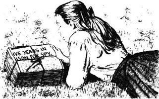
喝茶的时候，博比看上去非常沉默。
“出什么事儿了吗？”妈妈问她。
“我没事儿。”博比答道。
但是，喝完茶，妈妈还是上楼来到了博比的房间。“怎么了？”她想知道。
为了讲清事情的缘由，博比从床底下取出那张报纸，让她的妈妈看。
“噢，博比！”妈妈哭了，“你不相信这上面说的，对吗？你不相信爸爸真的是间谍，是吗？”
“我不相信！”博比回答。
“他是个好人，他很诚实，没有做错任何事情，”妈妈说，“我们得牢记这一点。”
“究竟发生了什么？”博比问。
“你还记得在老房子的时候那两个来找爸爸的人吗？”妈妈说，“他们说他是个间谍，说他把政府的机密出卖给了别的国家。在爸爸办公室的书桌里有一些信件。警察看到了这些信件，就断定爸爸是间谍。”
“可是，那些信怎么会到了他的书桌里呢？”博比问。
“有人放进去的，”妈妈说，“那个人才是真正的间谍。”
“谁？”博比问，“谁把信放进去的？”
“我还不清楚，”妈妈说，“不过现在接替爸爸工作的那个人与爸爸的关系一直不好，他一直想得到爸爸的职位。”
“那个人诚实吗？”博比问。
“爸爸从来也不确信。”妈妈说。
“难道我们不能跟人解释吗？”博比问。
“我已经努力过了，但没人愿意听，”妈妈伤心地说，“我已经试过了所有的办法。我们现在所能做的就是要勇敢地去面对，要有耐心。亲爱的，我们不要再说这些了。别再去想它了。如果你们幸福快乐的话，我会感到轻松一些的。”
但是博比仍在想着这件事。她没有跟彼得和菲利斯商量，但她偷偷写了一封信——写给那位老先生。
我亲爱的朋友：
请看看这张报纸上的内容。这不是真的。爸爸从来没做过这样的事情。妈妈说是有人把信放到爸爸的书桌里的，而且她认为这件事是接替爸爸工作的那个人干的。但是没有人愿意听妈妈的解释。您是个好人，又那么聪明。您能找出真正的间谍吗？真的不是爸爸！
彼得和菲利斯还不知道他被关进了监狱。您能帮帮我吗？噢，请一定帮帮我！
爱您的朋友
博比
她把信和那张报纸装在一起，拿到了车站。博比请站长第二天早晨把信转交给老先生。
现在她只能耐心等待，以观事态了。
8．The boy in the red shirt
8
The boy in the red shirt
'The boys from the school in Maidbridge' are having a paper-chase today,' said Bobbie, the next morning. 'Perks thinks they'll go along beside the railway line. We could go and watch.'
There were men working on the railway line, and the children began by watching them. They almost forgot the paper-chase, and were surprised when a voice said, 'Let me pass, please.' It was the first boy from the school.
'He's the "hare",' explained Bobbie. 'All the other boys are the "hounds" and they have to chase after him.'
There was a bag under the hare's arm. It was full of pieces of paper, which he dropped behind him for the other boys to follow. They watched as he ran into the black mouth of the tunnel.
The workmen watched him, too.
'He shouldn't go in there,' said one.
'It's only a game,' said another.
'Passengers shouldn't cross the line.'
'He's not a passenger.'
Then came the "hounds", following the pieces of white paper. They came down the steps at the side of the tunnel and disappeared into the darkness. The last boy was wearing a red shirt.
'Will they take long to get through the tunnel?' asked Peter.
'An hour or more,' guessed one of the men.
'Let's go across the top of the hill and see them come out the other end of the tunnel,' Peter said to his sisters.
The tunnel was cut through a hill. They climbed over stones and through narrow openings between trees, and at last they reached the very top of the hill.
'It's lovely up here,' said Bobbie, as she looked across the fields. 'It was worth the climb.'
'The paper-chase is worth the climb,' said Phyllis. 'But hurry, or we'll miss it.'
But there was plenty of time, and they had to wait at the other end of the tunnel
'Look, here he comes!' shouted Peter at last.
The hare came very slowly out of the shadows of the tunnel. Soon after, came the hounds. They were going slowly, too, and looked very tired.
'What shall we do now?' said Bobbie.
'That's not the last,' said Peter. 'The hound in the red shirt isn't out yet.' They waited and waited, but the boy did not appear.
The children began to worry, and they climbed down to the mouth of the tunnel. But they couldn't see a boy in a red shirt.
'Perhaps he's had an accident,' said Peter. 'Let's go and look.'
The tunnel was dark after the sunshine outside, and they walked beside the line.
'If a train comes, stand flat against the wall,' said Peter. His voice sounded very different inside the tunnel walls.
'I don't like it!' said Phyllis.
There was a low noise on the railway line.
'What's that?' said Peter.
'It's a train,' said Bobbie.
'Let me go back!' cried Phyllis.
'It's quite safe,' said Bobbie. 'Stand back.'
The train came towards them, and the noise got louder and louder. Then it was screaming past, and they could feel the hot air and smell the smoke. They pushed themselves flat against the tunnel wall.
'Oh!' said the children, after it was gone.
Peter took the end of a candle from his pocket, and his hand was shaking when he lit it with a match. 'C—come on,' he said. And the three of them went deeper into the darkness of the tunnel.
The boy in the red shirt was on the ground, beside the line. His eyes were closed and he did not move when they reached him.
'Is... is he dead?' asked Phyllis.
'Dead? No!' said Peter.
And slowly, the boy opened his eyes. 'I... I think I've broken my leg,' he said. 'How did you get here?'
'We saw you all go into the tunnel, and then we went across the hill to see you all come out,' explained Peter. 'The others came out, but you didn't. So we came to look for you.'
'You're very brave,' said the boy.
'Can you walk, if we help you?' said Bobbie.
'I can try,' said the boy. He did try, but he could only stand on one foot. 'Oh, I must sit down. The pain is awful.' He sat down again and closed his eyes. The others looked at each other.
'You must go and get help,' said Bobbie quickly. 'I'll stay with him. You take the longest bit of candle, but be quick.'
Peter looked worried. 'Let me stay, and you and Phyllis go.'
'No,' said Bobbie. 'You two go—and lend me your knife. I'll try and cut his boot off before he wakes up again. Just be quick!'
Bobbie watched their figures disappear, then put her little candle beside the boy's foot. She used Peter's knife to cut off the boot, then she looked at the broken leg. 'It needs something soft under it,' she thought, and then remembered her petticoat. She took it off and carefully put it under the boy's leg.
He woke up a few minutes later.
'What's your name?' asked Bobbie.
'Jim,' he said.
'Mine is Bobbie,' she said. 'Peter and Phyllis have gone to get some help.'
'Why didn't you go with them?' he said.
'Someone had to stay with you,' said Bobbie. 'I must put out the candle or it will burn itself out.'
'Are you afraid of the dark, Bobbie?' asked Jim, when they were sitting in the darkness.
'Not—not very afraid,' said Bobbie. 'But—'
'Let's hold hands,' said Jim. He put his large hand over her small one. Then they sat and waited.
Peter and Phyllis went to a farm to get help. When the two children got back to the tunnel with the men from the farm, they found Bobbie and Jim asleep.
The men carried Jim on a piece of flat wood.
'Where does he live?' asked one of them.
'In Northumberland,' answered Bobbie. 'He told me while we were waiting.'
'I'm at a school in Maid bridge,' said Jim, 'I suppose I must get back there.'
'A doctor ought to see you first,' said the man.
'Bring him to our house,' said Bobbie. 'It's not far along the road. I'm sure Mother will say it's all right.'
Mother did say it was all right, although she was a little surprised at first. Then Bobbie explained.
'I'm sorry to be so much trouble,' Jim said to Mother as the men carried him in. His face was white with pain.
'Don't worry, you poor dear,' said Mother. 'You must go to bed, and I'll send for Doctor Forrest.'
Mother also sent a message to Jim's school, to tell them what had happened.
'My grandfather lives near here,' said Jim.
'Then I'll write and tell him, too,' said Mother. 'I'm sure he'll want to know. What's his name?'
* * *
After breakfast the next day, someone knocked at the front door.
'That will be the doctor again,' said Mother. She went out of the kitchen and closed the door.
But it wasn't the doctor. The children listened as Mother and the visitor went upstairs. They heard them talking, and were sure that they knew the voice of the visitor. But who was it?
After a while, the bedroom door opened and they heard Mother and the visitor come down and go into the front room of the house. Then they heard Mother calling: 'Bobbie!'
Mother was in the hall. 'Jim's grandfather has come,' she said. 'He wants to see you all.'
They followed Mother into the other room, and there sat—THEIR OWN OLD GENTLEMAN.
'Oh, it's you!' cried Bobbie.
'How wonderful!' said Peter. 'But you're not going to take Jim away, are you? I was hoping he could stay.'
The old gentleman smiled. 'No,' he said. 'Your mother is very kind. She has agreed to let Jim stay here. I thought of sending a nurse, but your mother was good enough to agree to be his nurse herself.'
'But what about her writing?' said Peter, before anyone could stop him. 'There won't be anything for him to eat if she doesn't write.'
The old gentleman smiled kindly at Mother. 'She has agreed to stop her writing for a while, and become Head Nurse of my hospital.'
'Oh!' said Phyllis. 'Will we have to go away from the white house, and the railway and everything?'
'No, no, darling,' Mother said quickly. 'The hospital is here, at this house.'
'And my unlucky Jim is the only one needing a nurse,' said the old gentleman. 'But there will be a maid and someone to cook the meals until Jim is well.'
'Then will Mother start writing again?' asked Peter.
'Perhaps something nice will happen, and she won't have to,' said the old gentleman. 'Take care of your mother, my dears. She's a woman in a million. Now, perhaps Bobbie can take me to the door?'
The two of them went outside, and the old gentleman said, 'I got your letter, my child, but it wasn't necessary. When I read about your father in the newspapers at the time, I began trying to find out things. I haven't done much yet, but I have hopes, my dear—I have hopes.'
'Oh!' said Bobbie, crying a little.
'But keep your secret a little longer,' he said.
'You don't think Father did it, do you?' said Bobbie. 'Oh, say you don't!'
'I'm sure he didn't,' said the old gentleman.
paper-chase 循纸追捕比赛，一种撒纸屑追逐游戏，也叫“犬兔”越野追逐（假扮兔子者在前边跑边撒纸屑，假扮猎犬者在后跟踪追赶的户外运动）。
hound n. a hunting dog. 猎狗。
get through pass through. 通过。
plenty of a great deal of. 许多，大量。
smell v. notice sb. or sth. by using nose. 闻。
look for to try to find. 寻找。
lend v. to give someone the possessions or use of sth. for a limited time. 借，借给。
put out to make sth. to stop burning. 熄灭。
suppose v. to take as likely; consider as true. 猜想。
ought to should. 应该。
hall n. space or passage on the inside of the main entrance or front door of a building. 门厅，门厅走廊。
one in a million 万里挑一。
necessary adj. essential for a purpose; that cannot be done without or avoided. 必要的；必不可少的。
穿红衬衣的男孩儿
8．穿红衬衣的男孩儿
“今天，梅德布里奇学校的男生要举办循纸追捕比赛。”第二天早晨，博比说，“珀克斯说他们可能会沿铁路线进行。我们去看看吧。”
铁路上有人在干活，孩子们就开始看他们工作。他们几乎忘了循纸追捕那回事儿了，所以当听见有人说：“请让我过去。”的时候，他们甚至有些吃惊。说这话的是从学校跑出来的第一名男生。
“他就是‘野兔’，”博比解释说，“其他的男生都是‘猎狗’，他们一起来追赶他。”
“野兔”的胳膊下面夹着一个包。包里装满了纸，他把这些纸丢在身后，让其他男生循着这些纸来追赶他。孩子们看见他跑进了隧道的大黑洞里。
工人也看着他。
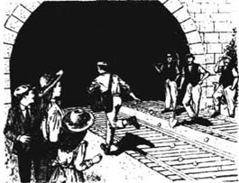
“他不应该进去。”一个工人说。
“这只是个游戏。”另一个说。
“乘客不能横穿铁路。”
“可他不是乘客。”
随后“猎狗”们顺着那些白纸追了过来。他们沿着隧道侧翼的台阶下去，消失在黑暗中。跑在最后的那个男生穿着一件红衬衣。
“他们需要很长时间才能穿出隧道吗？”彼得问。
“要一小时或更久。”一个工人推测。
“那我们从山顶上翻过去，到隧道那头看他们钻出来。”彼得向他的姐妹建议。
这是一条穿山隧道。孩子们从乱石堆和茂密的树丛中艰难地爬过，终于到达了山顶。
“这山上可真美呀，”博比放眼四周的田野，感叹说，“我们爬山也值了。”
“是为了看循纸追捕，才觉得爬山很值，”菲利斯说，“不过快点吧，要不然我们就看不见他们了。”
其实时间还早，他们只好在隧道另一端的出口处等着。
“瞧，他出来了！”彼得终于大喊。
“野兔”从隧道的阴影里慢慢地走了出来。很快，“猎狗”们也出来了。他们也走得很缓慢，看起来好像已经是精疲力尽了。
“我们现在做什么？”博比说。
“还没完呢，”彼得说，“那个穿红衬衣的“猎狗”还没出来呢。”他们等啊，等啊，可那个男孩儿还是没有出现。
孩子们开始有些担心了，于是他们从山上爬下来到了隧道口。但是，他们还是瞧不见那个穿红衬衣的男孩儿。
“也许他出事儿了。”彼得说，“我们去看看吧。”
因为外面的光线很强，隧道显得格外黑，孩子们沿着铁路线往前走。
“要是火车来了，就贴着墙站。”彼得吩咐大家。因为是在隧道里，他的声音听起来有些异样。
“我不喜欢这里！”菲利斯说。
这时，铁轨发出了低沉的颤音。
“什么声音？”彼得说。
“火车来了。”博比说。
“我们回去吧！”菲利斯哭着说。
“这儿很安全。”博比说，“往后站。”
火车向他们驶来，声音越来越大。然后刹那间，火车便呼啸而过，他们能感受到热浪、能闻到烟气。孩子们紧贴在隧道的墙上。
“噢！”火车过后，孩子们松了一口气。
彼得从口袋中掏出一小截蜡烛，在他用火柴点蜡烛的时候，手一直在颤抖。“跟——跟上来。”他说。于是，他们三个一起往黑暗隧道的更深处走去。
那个穿红衬衣的男孩儿躺在铁路旁的地上。他的双眼紧闭，三个孩子到了跟前他也没动一动。
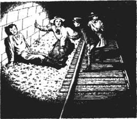
“他……他死了吗？”菲利斯问。
“死了？没有！”彼得回答。
渐渐地，男孩儿睁开了眼睛。“我……我想我的腿折了，”他说，“你们怎么到这儿来了？”
“我们看着你们都进了隧道，然后我们又从山上爬过去，看你们穿出隧道，”彼得解释说，“其他人都出来了，你却没有。所以我们就过来找你了。”
“你们可真勇敢。”男孩说道。
“如果我们帮着你，你能走吗？”博比问。
“我可以试试，”男孩儿回答。他果真试了试，但是只有一条腿能站起来。“噢，我必须坐下。太疼了。”他又坐了下来，闭上了眼睛。三个孩子面面相觑。
“你们得出去找人帮忙，”博比果断地说，“我和他留在这里。你们带上最长的那截蜡烛出去，快点儿回来。”
彼得看上去很犹豫。“让我留下吧，你和菲利斯去找人。”
“不行，”博比说，“你们两个人去——把你的刀子借给我用一下。在他再次醒过来之前，我得想办法把他的靴子割开脱下来。快点儿！”
博比目送他们的身影消失在黑暗中，然后她点着手中的小蜡烛，放在男孩儿的脚边。她用彼得的那把刀子割开男孩儿的靴子，看了看那条摔折的腿。“这条腿需要用软一点儿的东西垫一垫。”她脑子里闪过这样的念头，她又想到了自己的衬裙。她脱掉衬裙，小心地垫到男孩儿的腿下。
几分钟后，他醒了。
“你叫什么名字？”博比问。
“吉姆。”他回答。
“我叫博比，”她说，“彼得和菲利斯出去找人帮忙了。”
“那你为什么没和他们一起去呢？”男孩说。
“得有人陪着你呀，”博比说，“我得吹灭蜡烛了，不然的话它会烧完的。”
“博比，你怕黑吗？”吉姆问，他们就坐在黑暗中。
“不——不太害怕，”博比回答。“不过——”
“让我们握着彼此的手。”吉姆说着，一边用他的大手握住了她的小手。他们坐在那里等着。
彼得和菲利斯到一个农场去寻求帮助。当两个孩子和农场里的人一起返回隧道时，他们发现博比和吉姆都睡着了。
那些人用一块平平的木板抬起吉姆。
“他住在哪里？”一个人问。
“在诺森伯兰，”博比回答，“刚才等你们的时候他告诉我的。”
“我在梅德布里奇的一个学校读书，”吉姆说，“我想我该先回那儿去。”
“你应该先看医生。”那个人说。
“把他抬回我们家吧，”博比说，“沿着这条路走，我家很近。我相信妈妈会同意的。”
妈妈的确同意，尽管起初她有些吃惊。随后博比做了解释。
“对不起，给你们添了这么多麻烦。”被抬进屋的时候，吉姆向妈妈表示歉意。他的脸因为疼痛已经没有了一点血色。
“别担心，可怜的孩子，”妈妈说，“你需要上床休息，我让人去请福里斯特医生。”
与此同时，妈妈还给吉姆的学校捎去了口信，告诉他们所发生的一切。
“我爷爷住得离这儿不远。”吉姆说。
“那好，我也给他写封信，把情况告诉他，”妈妈说，“我相信他也一定想知道。他叫什么名字呢？”
* * *
第二天早饭过后，有人敲前门。
“肯定又是医生。”妈妈说。她走出厨房，关上了门。
但是来者不是医生。孩子们听见妈妈和来人上楼的声音。听见他们谈话，孩子们觉得来人的声音很耳熟。但那人到底是谁呢？
过了一会儿，卧室的门开了，他们听见妈妈和来人下楼到了客厅里。他们听见妈妈在喊：“博比！”
妈妈就在厅里。“吉姆的爷爷来了，”她说，“他想见见你们。”
他们跟着妈妈来到了另一间房子里，这里竟然坐着——他们的那位老先生。
“哦，是您呀！”博比大叫。
“太棒了！”彼得说，“不过您不会把吉姆带走吧，您会吗？我想让他留下来。”
老先生微笑着。“不，”他说，“你们的妈妈非常好，她已经同意让吉姆留在这里了。我本来想派一个护士过来，可是你们的妈妈说她自己就能照料好他。”
“那妈妈还怎么写故事呀？”大家还没来得及阻止，彼得就把这句话说出来了，“要是她不写故事了，他就没有东西吃了。”
老先生望着妈妈，脸上露出慈祥的微笑。“她已经同意暂时不写故事，到我的医院来做护士长了。”
“哦！”菲利斯说，“我们就要从白色小屋搬出来，离开铁路，离开这里的一切了吗？”
“不，不，亲爱的孩子们，”妈妈马上说，“医院就在这里，就在我们家。”
“我可怜的孙子吉姆是惟一需要护理的人，”老先生说，“不过在吉姆康复之前，我会派一个女佣，再派一个人过来做饭的。”
“那么等吉姆好了以后，妈妈就又可以写故事了吗？”彼得问。
“也许福星降临，她就不用再写故事了，”老先生说，“好好照顾你们的妈妈，孩子们。她可是个万里挑一的好妈妈。现在，也许博比可以把我送到门口？”
两个人走出房间之后，老先生说：“孩子，我已经收到了你的来信，其实你没必要给我写信。我刚在报纸上看到你爸爸的事情时，就已经开始着手调查事情的真相了。虽然我还没有什么收获，但是我充满信心，亲爱的孩子——我充满信心。”
“哦！”博比说，抽泣起来。
“不过你暂时还要保密。”他说。
“你不认为是我爸爸干的，对吗？”博比说，“哦，请告诉我，你不这么认为！”
“我坚信他没干。”老先生说。
9．The man at the station
9
The man at the station
Life at the white house was never quite the same again. Jim's leg got better and better, and he told them stories about his school. And now Mother was not writing stories every day, she was able to teach the children their lessons.
'I wonder if the railway misses us,' said Phyllis one day. 'We never go and see it now.'
'It seems ungrateful,' said Bobbie. 'We loved it when there wasn't anyone to play with. And we've stopped waving to the 9.15, and sending our love to Father by it.'
'Let's begin again,' said Phyllis.
So the next morning, they ran down to the fence and watched the 9.15 come out of the tunnel.
'Take our love to Father!' they cried, as they waved their handkerchiefs.
The old gentleman waved from his window. And there was nothing strange about that, because he had always waved. But now... hands and handkerchiefs and newspapers waved from every window of the train, and smiling faces looked up at the children on the fence.
'Well!' said Phyllis.
'What does it mean?' said Peter.
'Perhaps the old gentleman told the people to wave,' said Bobbie. But she had a strange feeling inside her, a feeling that something was going to happen.
Lessons with Mother were difficult for Bobbie that morning. She found it hard to think about them.
'What is it, my darling?' asked Mother. 'You don't feel ill, do you?'
'I don't know,' answered Bobbie. 'Perhaps I'd feel better in the garden.'
But the trees and the flowers all seemed to be waiting for something to happen. It was one of those quiet September days, when everything does seem to be waiting. 'I'll go down to the station and talk to Perks,' she thought.
Everyone seemed to have a newspaper in their hand that morning. Several people waved theirs at Bobbie, and smiled as she went by—people who never usually waved or smiled at her. 'How strange,' she thought.
Perks wasn't anywhere on the platform, and Bobbie had only the station cat to talk to. 'How kind and friendly everybody is today,' she said to the cat.
Perks appeared when it was time for the 11.54 to arrive. He had a newspaper, too. 'Hallo,' he said to Bobbie. 'I saw it in the paper, and I've never been so pleased about anything in all my life.'
'What did you see in the paper?' asked Bobbie.
But already the 11.54 was steaming into the station, and Perks was looking in all the windows.
Only three people got out of the train. The first was a woman with three boxes of chickens. The second was a woman with a brown suitcase.
And the third...
'Oh! my Daddy, my Daddy!' cried Bobbie.
That scream went like a knife into the heart of everyone on the train. People put their heads out of windows and saw the tall white-faced man and the little girl, with their arms around each other.
'I knew something wonderful was going to happen,' said Bobbie, as they went up the road. 'But I didn't think it was going to be this. Oh, my Daddy!'
'Didn't Mother get my letter?' asked Father.
'There weren't any letters this morning,' said Bobbie. 'Oh, Daddy. It really is you, isn't it?'
He held her hand and said, 'You must go in by yourself, and tell Mother very quietly that it's all right. They've caught the man who did it. Everyone knows now that your Daddy isn't a spy.'
'We always knew you weren't,' said Bobbie. 'Me and Mother and our old gentleman.'
'Yes,' said Father. 'It's him I must thank.'
* * *
And now they are going across the field. Bobbie goes into the house, trying to find the right words to tell Mother that Father has come home. Father is walking in the garden—waiting. He is looking at the flowers, but he keeps turning towards the house.
Now the door opens. Bobbie's voice calls:
'Come in, Daddy. Come in!'
ungrateful adj. not grateful. 忘恩负义。
seem v. have or give the impression or appearance of being or doing something. 似乎，好像。
suitcase n. a flat bag for carrying clothes and possessions when travelling. 手提箱。
车站上的人
9．车站上的人
白色小屋里的生活发生了巨大的变化。吉姆的腿恢复得越来越好，他经常给他们讲一些发生在自己学校里的故事。现在妈妈也不必每天写故事了，因此她就有时间教孩子们一些功课。
“我想知道铁路是否会想念我们，”一天菲利斯说，“因为我们最近不到那儿去了。”
“似乎有些忘恩负义，”博比说，“过去没人和我们玩的时候，我们曾很喜欢它。而且我们也不再去跟9点15分的那趟火车招手，让它把我们的爱带给爸爸了。”
“那我们重新开始吧。”菲利斯说。
于是第二天一早，他们便跑到山下的篱笆那里，去迎接9点15分的那趟火车穿出隧道。
“把我们的爱带给爸爸！”他们一边大喊，还一边挥舞着他们的手绢。
老先生仍然从窗口招手，这没有什么可奇怪的，因为他一直是这样做的。但是现在……列车的每一个窗口都挥着手和手绢或者报纸，一张张笑脸注视着篱笆墙上的孩子们。
“哦！”菲利斯说。
“这是怎么回事儿？”彼得说。
“也许是老先生让人们朝我们挥手的。”博比说。不过她心里还是有一种异样的感觉，预感到有什么事情将要发生。
那天早晨，博比觉得很难专心听妈妈讲功课。她觉得自己没法把心思放到功课上。
“出什么事儿了，亲爱的？”妈妈问，“你没有觉得不舒服吧？”
“我不知道，”博比回答，“也许到花园里走走我会好受一些。”
但是，院子里的树木和鲜花好像也在期待着什么事情的发生。在那个安静的九月的日子里，周围的一切好像都在期待着什么。“我应该下山，到车站和珀克斯谈一谈。”博比心想。
那天早晨似乎每个人手里都拿着一份报纸。在博比经过的时候，有几个人还对她微笑，挥舞着他们手中的报纸——这些人平时一般不跟她挥手或者对她微笑的。“太奇怪了。”博比心里想。
珀克斯没在站台上，博比只好和车站的小猫聊了起来。“今天这里的每一个人都是这么和善，这么友好。”她对小猫说。
当11点54分的那趟火车快要进站的时候，珀克斯终于出现了。他手里也拿着一份报纸。“你好，”他跟博比招呼道，“我在报纸上看到了，我这一辈子还没有为什么事情这么高兴过。”
“你在报纸上看到了什么？”博比问。
恰巧此时，11点54分的那趟列车进站了。珀克斯往每一个窗口里瞧着。
只有三位旅客下车。第一位是个女士，她带了三箱小鸡。第二位也是个女士，带着一个棕色的手提箱。
第三位是……
“哦！我的爸爸，我的爸爸！”博比叫着。
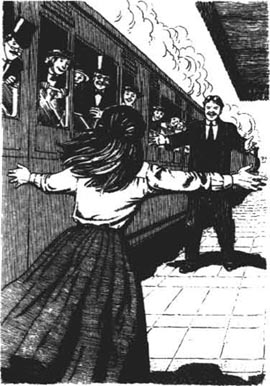
这叫声像把尖刀一样，直刺进车上每位旅客的心间。他们纷纷把头伸出窗外，看见那个身材高大、面色白皙的男人和一个小姑娘拥抱在一起。
“我已经预感到今天会有好事发生，”在沿着大路回家的时候，博比说，“但是，我没想到会是这么大的喜事。哦，我的爸爸！”
“妈妈没有收到我的信吗？”爸爸问。
“今天早晨没有信呀。”博比回答，“哦，爸爸。真的是您吗，没错吧？”
爸爸握着她的手说：“你自己先回去，悄悄地告诉妈妈现在没事了，他们已经抓住那个贩卖情报的人了。现在大家都知道你们的爸爸不是间谍。”
“我们一直知道您不是，”博比说，“我，妈妈，还有我们那位老先生。”
“对，”爸爸说，“我一定要谢谢他。”
* * *
现在他们已经穿过了田野。博比进了家，她绞尽脑汁，想用最合适的话告诉妈妈，爸爸已经回来了。爸爸此刻就在花园里转悠着呢——他也在等待着。虽然眼睛瞧着院子里的鲜花，可他却不住地回转身朝房子那边观望。
现在屋门打开了，传来了博比的叫声：
“请进，爸爸。请进！”
ACTIVITIES: Before Reading
ACTIVITIES
Before Reading
1．Read the story introduction of the book. How much do you know now about the story? Choose T (true) or F (false) for each sentence.
1) The children live next to the railway in London. T/F
2) They have always been railway children. T/F
3) They leave London and go to live in the country. T/F
4) There are wild animals living in the railway tunnel. T/F
5) Their best friend is an engine driver. T/F
6) The family now has very little money. T/F
7) The children's father is dead. T/F
8) Their mother is unhappy but tries to hide it. T/F
2．How much can you guess about this story? Choose answers to these questions. (You can choose more than one.)
1) The family is poor, so what do the children do? They...
(a) steal things.
(b) get jobs.
(c) make things and sell them.
(d) ask strangers for help.
2) Why has the children's father gone away? Because he...
(a) is very ill.
(b) is a criminal.
(c) is in prison.
(d) is abroad on business.
3) What kind of adventures do the children have? They...
(a) get locked in a train.
(b) stop a train on the line.
(c) ride with the engine driver.
(d) see a ghost train.
ACTIVITIES: While Reading
ACTIVITIES
While Reading
1．Read Chapters 1 and 2, and then answer these questions.
1) What happened to Father three days after Peter's birthday?
2) Where were Mother and the children going to live?
3) How did they travel to their new house?
4) Why did they eat cold meat and apple pie for breakfast?
5) Where did the children go the first afternoon?
6) Why didn't Mother let them have fires in June?
7) Why did the Station Master call Peter a thief?
8) What did the Station Master do about Peter and the coal?
2．Read Chapters 3 and 4. Who said this, and to whom? Who or what were they talking about?
1) 'It's going to London, where Father is.'
2) 'That's over and forgotten now.'
3) 'We can't buy all those things! We're poor, remember?'
4) 'I thought I was going to miss you!'
5) 'The old gentleman asked me to bring it.'
6) 'I hope Mother thinks we were right, too.'
7) 'Now we won't say any more about it.'
8) 'You mustn't see what we're doing. It's a surprise.'
9) 'You... you can have half, if you like.'
10) 'I... I wanted to ask if you could mend this.'
11) 'Can we help the little lady?'
3．Before you read Chapter 5 (Saving the train), can you guess what the children do and how they do it? Choose some of these ideas.
1) When an engine driver suddenly falls ill, they drive the train safely to a station.
2) They get some cows off the line just before a train comes.
3) They stop a train from crashing into some fallen trees.
4) They stop a train from going into a dangerous tunnel.
5) They hold up a sheet with a warning message on it.
6) They climb a telegraph post and send a message down the wire.
7) They make some red flags and wave them at the train.
8) They change the railway signals to make the train stop.
4．Read Chapters 5 and 6. Choose the best question-word for these questions, and then answer them.
What / Who / Why
1) ... did Bobbie do that was very brave?
2) ... were the children given beautiful gold watches?
3) ... came back to the house to meet the children's mother?
4) ... refused at first to give anything for Perks, and why?
5) ... did Bobbie and Phyllis put inside the Post Office door?
6) ... did Mrs Ransome have a pram to give away?
7) ... did the children hide in the other room?
8) ... was Perks angry about the presents at first?
9) ... did people in the village say about Perks?
10) ... did Perks like best of all?
5．Before you read Chapter 7 (The terrible secret), can you guess which are the right answers to these questions?
1) Who is the terrible secret about?
(a) The children's mother
(b) The children's father
(c) The old gentleman
(d) Perks the porter
2) Who finds out about the secret?
(a) Two of the children
(b) All three children
(c) Bobbie
(d) Peter
6．Read Chapters 7 and 8. These sentences are all untrue. Rewrite them with the correct information.
1) The children had stopped asking questions about their father because they had forgotten him.
2) In the paper-chase the boy in the red shirt came out of the tunnel first, so the children went to tell the workmen.
3) The children had nothing to give them light in the tunnel.
4) The boy was lying on the ground because he was tired.
5) Peter stayed with Jim, while the other two went for help.
6) Jim was the old gentleman's son.
7) The old gentleman asked Mother to be Jim's teacher.
8) The old gentleman told Bobbie a secret.
7．Before you read the last chapter, can you guess the ending?
1) Who is the man at the station?
2) Who sees him first?
ACTIVITIES: After Reading
ACTIVITIES
After Reading
1．Perhaps this is what some of the characters in the story were thinking. Which characters are they, and what has just happened in the story?
1) 'What's all this on the table? A pipe, a walking stick, a box of apples, a tin of tea... and there's a pram over there! What's going on?'
2) 'So that's why they wanted me to look out at the station! She was only just in time. I wonder what their letter will say. Well, I must read it and find out...'
3) 'Oh dear! She did make me jump when she touched my arm! But I didn't mean to shout at her. Now she's crying, poor little thing! But how did she get into our coal heap?'
4) 'It must be hard for them, suddenly being poor and not having enough coal for a fire. They're only children, after all. I'll just give them a warning and send them home...'
2．Here is a newspaper report about the accident that didn't happen. Put the parts of sentences in the right order, and join them with these linking words to make four sentences.
and / before / so / when / who
1) ______ were walking on the hillside beside the rail way.
2) There was nearly a serious accident today
3) ______ the 11.29 train came by,
4) The driver of the train saw them waving these red flags
5) ______ some trees and rocks fell down on the railway line.
6) They knew they could not get a warning to the station
7) ______ stopped the train to find out what the matter was.
8) Luckily, the rock fall was seen by three children
9) ______ they used the girls' red petticoats to make flags.
3．When Mother first met the old gentleman (see Chapter 5), they didn't say very much. Perhaps this is what they wanted to say. Complete the old gentleman's side of the conversation.
MOTHER: We live very quietly. My husband is—is away.
OLD GENTLEMAN: _____________________________
MOTHER: Yes, he is. How did you know?
OLD GENTLEMAN: _____________________________
MOTHER: Ah yes, the newspapers. But my husband is not a spy. He never sold secrets to anybody!
OLD GENTLEMAN: _____________________________
MOTHER: Thank you for saying that.
OLD GENTLEMAN: _____________________________
MOTHER: No. It's better that they know nothing about it.
OLD GENTLEMAN: _____________________________
MOTHER: I've told them that he will be away for some time, on government business.
OLD GENTLEMAN: _____________________________
MOTHER: You're very kind, but nobody will listen. I've tried everything. All I can do now is be brave and patient.
4．There are 22 words (4 letters or longer) from the story in this word search. Find the words and draw lines through them. They go from left to right, and from top to bottom.
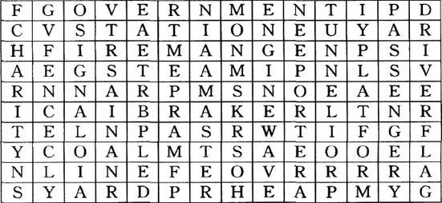
1) Which words from the word search are connected with trains and the railway?
2) Which six words make the names of four jobs connected with the railway?
5．Look at the word search again and write down all the letters that don't have a line through them. Begin with the first line and go across each line to the end. You should have 23 letters, which will make 6 words.
1) What are the words, where were they, and who read them?
2) How did the person feel after reading the words, and why?
3) What did the person do after reading the words?
6．What did the old gentleman say to the other passengers on the 9.15 on that September morning? Use words from the story (one word for each gap) to complete what he says.
'Would you do something for me today, just after the train comes out of the ______? If you see three children, waiting by the ______, waving their ______, could you ______ back at them? You see, it's a special day for them. Their______, who will be on the 11.54 train, has just come out of ______. He was sent there for selling ______ secrets to another ______, but he didn't do it. The police have now caught the real ______, and so this man can go home to his ______. and ______. They don't know he's coming, so it will be a wonderful______!'
7．What are these things usually used for? What did the children use them for in the story? Write sentences to explain.
1) A sheet ___________________________________
2) Paint _____________________________________
3) A petticoat _______________________________
4) A pram ____________________________________
8．What did you think about this story? Choose some of these sentences and complete them in your own words.
1) I liked / didn't like ______because ______.
2) I thought ______ was right / wrong to ______.
3) I felt sorry for ______ when / because ______.
4) The part of the story I liked most / least was ______.
5) I liked / didn't like the ending because ______.
封底
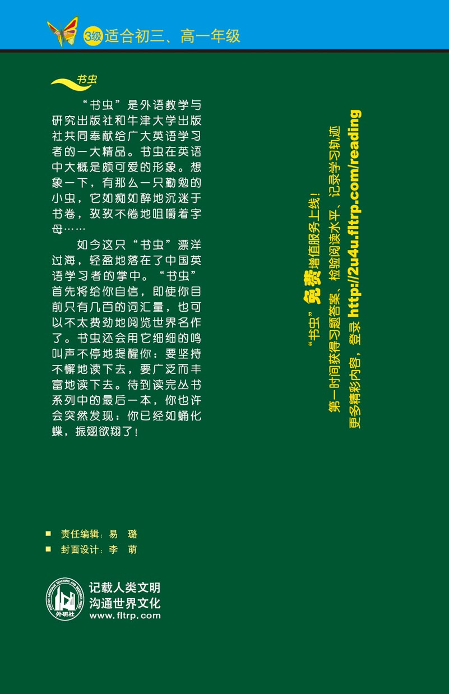